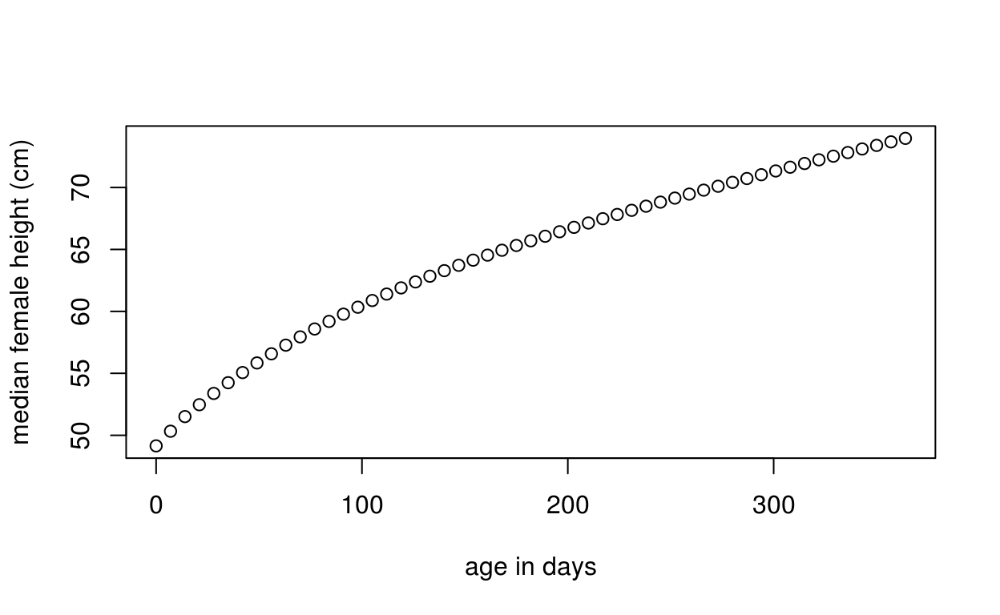
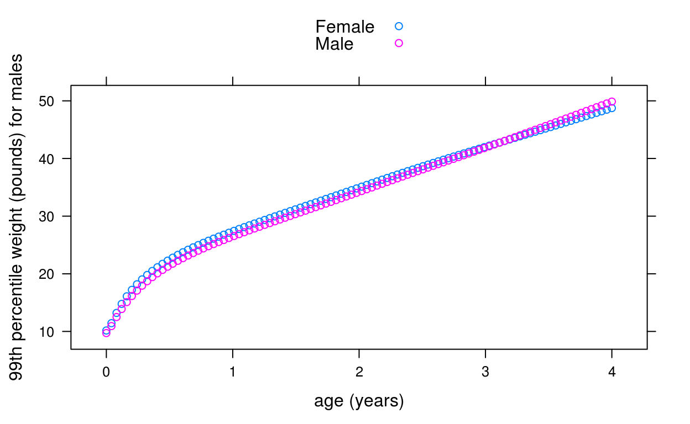
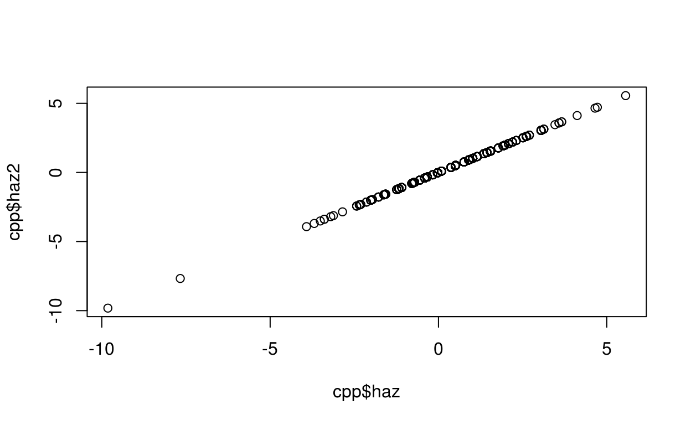
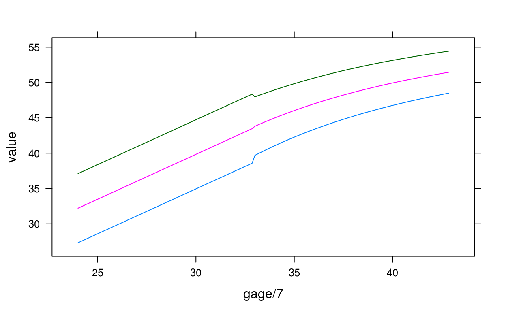
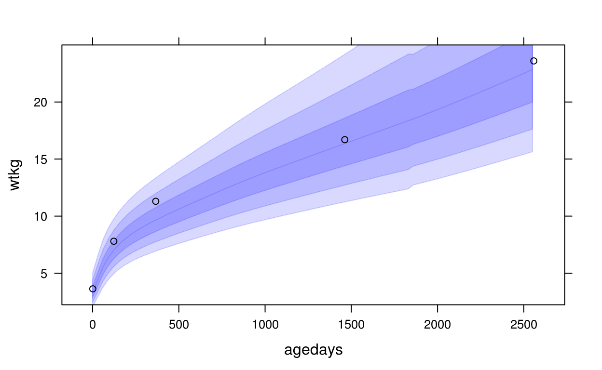
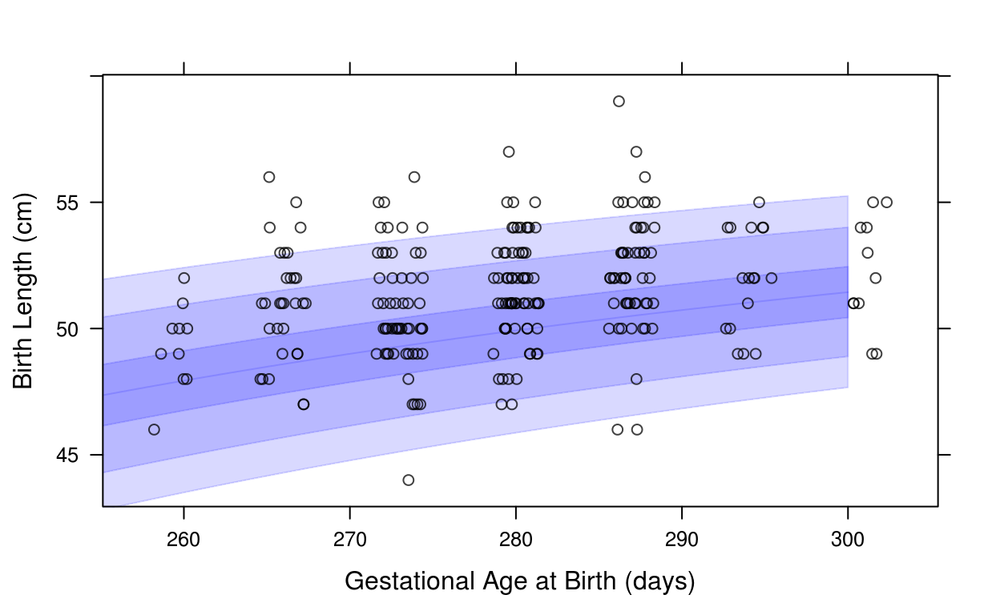
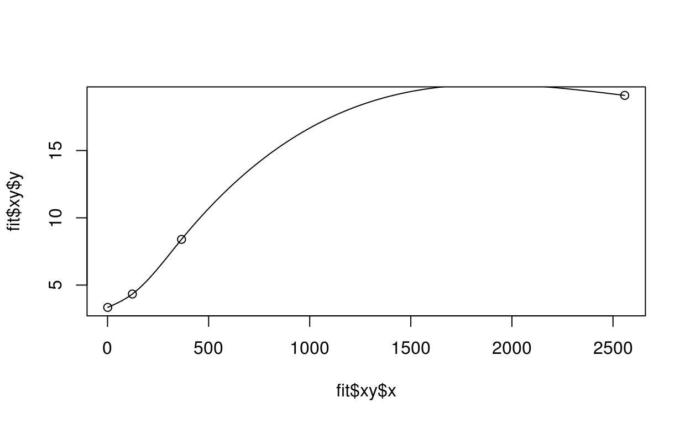
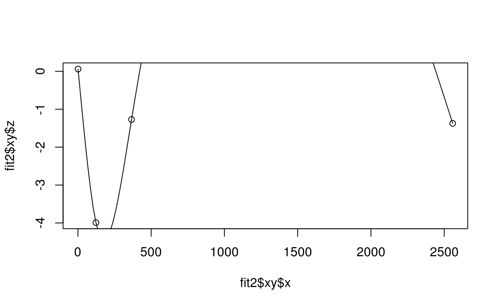

Authors: Ryan Hafen [aut, cre],Craig Anderson [ctb],Barret Schloerke [ctb]
Version: 0.3.6
License: MIT + file LICENSE
A package for visual and analytical methods for the analysis of longitudinal growth data.
R (>= 3.1), datadr (>= 0.8.1), trelliscope (>= 0.9.2)
dplyr, lattice, rbokeh (>= 0.5.0), ggplot2, mgcv, MASS, numDeriv, gamlss.dist, fda, sitar (>= 1.0.3), DT, lme4, nlme, scales, crayon, stringdist
testthat, packagedocs, brokenstick (>= 0.49), face (>= 0.1-2)
check_data(dat, has_height = TRUE, has_weight = TRUE, has_hcir = TRUE)check_data(cpp, has_hcir = FALSE)## Checking if data is a data frame...## [32m✓[39m## Checking variable name case...## [32m✓[39m## Checking for variable 'subjid'...## [32m✓[39m## Checking for variable 'agedays'...## [32m✓[39m## Checking for variable 'sex'...## [32m✓[39m## Checking values of variable 'sex'...## [32m✓[39m## Checking for variable 'lencm'...## [32m✓[39m## Checking for variable 'htcm'...## [32m✓[39m## Checking for variable 'wtkg'...## [32m✓[39m## Checking for both 'lencm' and 'htcm'...## Checking z-score variable 'haz' for height...## [32m✓[39m## Checking z-score variable 'waz' for weight...## [32m✓[39m## Checking to see if data is longitudinal...## [32m✓[39m## Checking names in data that are not standard 'hbgd' variables...## All checks passed!## As a final check, please ensure the units of measurement match## the variable descriptions (e.g. age in days, height in centimeters, etc.).smc <- brokenstick::smocc.hgtwgt
check_data(smc, has_hcir = FALSE)## Checking if data is a data frame...## [32m✓[39m## Checking variable name case...## [32m✓[39m## Checking for variable 'subjid'...## [31m✗[39m## Variable 'subjid' was not found in the data.## Closest matches (with index): id (2), bw (9)## Definition: Subject ID## This variable is required.## Please create or rename the appropriate variable.## To rename, choose the appropriate index i and:## names(dat)[i] <- 'subjid'## Checking for variable 'agedays'...## [31m✗[39m## Variable 'agedays' was not found in the data.## Closest matches (with index): age (5), ga (8)## Definition: Age since birth at examination (days)## This variable is required.## Please create or rename the appropriate variable.## To rename, choose the appropriate index i and:## names(dat)[i] <- 'agedays'## Checking for variable 'sex'...## [32m✓[39m## Checking values of variable 'sex'...## [31m✗[39m## All values of variable 'sex' must be 'Male' and 'Female'.## Checking for variable 'lencm'...## ## Variable 'lencm' was not found in the data.## Closest matches (with index): nrec (4), rec (3)## Definition: Recumbent length (cm)## This variable is not required but if it exists in the data## under a different name, please rename it to 'lencm'.## Checking for variable 'htcm'...## ## Variable 'htcm' was not found in the data.## Closest matches (with index): hgt (10), hgt.z (12)## Definition: Standing height (cm)## This variable is not required but if it exists in the data## under a different name, please rename it to 'htcm'.## Checking for variable 'wtkg'...## ## Variable 'wtkg' was not found in the data.## Closest matches (with index): wgt (11), hgt (10)## Definition: Weight (kg)## This variable is not required but if it exists in the data## under a different name, please rename it to 'wtkg'.## Checking for both 'lencm' and 'htcm'...## Checking names in data that are not standard 'hbgd' variables...## The following variables were found in the data:## src, id, rec, nrec, age, etn, ga, bw, hgt, wgt, hgt.z## Run view_variables() to see if any of these can be mapped## to an 'hbgd' variable name.## Some checks did not pass - please take action accordingly.names(smc)[2] <- "subjid"
names(smc)[5] <- "agedays"
smc$sex <- as.character(smc$sex)
smc$sex[smc$sex == "male"] <- "Male"
smc$sex[smc$sex == "female"] <- "Female"
names(smc)[10] <- "htcm"
names(smc)[11] <- "wtkg"
check_data(smc, has_hcir = FALSE)## Checking if data is a data frame...## [32m✓[39m## Checking variable name case...## [32m✓[39m## Checking for variable 'subjid'...## [32m✓[39m## Checking for variable 'agedays'...## [32m✓[39m## Checking for variable 'sex'...## [32m✓[39m## Checking values of variable 'sex'...## [32m✓[39m## Checking for variable 'lencm'...## ## Variable 'lencm' was not found in the data.## Closest matches (with index): nrec (4), rec (3)## Definition: Recumbent length (cm)## This variable is not required but if it exists in the data## under a different name, please rename it to 'lencm'.## Checking for variable 'htcm'...## [32m✓[39m## Checking for variable 'wtkg'...## [32m✓[39m## Checking for both 'lencm' and 'htcm'...## Checking z-score variable 'haz' for height...## ## Could not find height z-score variable 'haz'.## If it exists, rename it to 'haz'.## If it doesn't exist, create it with:## dat$haz <- who_htcm2zscore(dat$agedays, dat$htcm, dat$sex)## Checking z-score variable 'waz' for weight...## ## Could not find weight z-score variable 'waz'.## If it exists, rename it to 'waz'.## If it doesn't exist, create it with:## dat$waz <- who_wtkg2zscore(dat$agedays, dat$wtkg, dat$sex)## Checking to see if data is longitudinal...## [32m✓[39m## Checking names in data that are not standard 'hbgd' variables...## The following variables were found in the data:## src, rec, nrec, etn, ga, bw, hgt.z## Run view_variables() to see if any of these can be mapped## to an 'hbgd' variable name.## All checks passed!## As a final check, please ensure the units of measurement match## the variable descriptions (e.g. age in days, height in centimeters, etc.).names(smc)[12] <- "haz"
smc$waz <- who_wtkg2zscore(smc$agedays, smc$wtkg, smc$sex)
smc$agedays <- smc$agedays * 365.25
check_data(smc, has_hcir = FALSE)## Checking if data is a data frame...## [32m✓[39m## Checking variable name case...## [32m✓[39m## Checking for variable 'subjid'...## [32m✓[39m## Checking for variable 'agedays'...## [32m✓[39m## Checking for variable 'sex'...## [32m✓[39m## Checking values of variable 'sex'...## [32m✓[39m## Checking for variable 'lencm'...## ## Variable 'lencm' was not found in the data.## Closest matches (with index): nrec (4), rec (3)## Definition: Recumbent length (cm)## This variable is not required but if it exists in the data## under a different name, please rename it to 'lencm'.## Checking for variable 'htcm'...## [32m✓[39m## Checking for variable 'wtkg'...## [32m✓[39m## Checking for both 'lencm' and 'htcm'...## Checking z-score variable 'haz' for height...## [32m✓[39m## Checking z-score variable 'waz' for weight...## [32m✓[39m## Checking to see if data is longitudinal...## [32m✓[39m## Checking names in data that are not standard 'hbgd' variables...## The following variables were found in the data:## src, rec, nrec, etn, ga, bw## Run view_variables() to see if any of these can be mapped## to an 'hbgd' variable name.## All checks passed!## As a final check, please ensure the units of measurement match## the variable descriptions (e.g. age in days, height in centimeters, etc.).get_subject_data(dat)
get_time_data(dat)fix_height(dat)add_holdout_ind(dat, random = TRUE)Infer attributes such as variable types of a longitudinal growth study and add as attributes to the dataset.
get_data_attributes(dat, meta = NULL, study_meta = NULL)
attributes added: - subjectlevel_vars: vector of names of subject-level variables - timevarying_vars: vector of names of time-varying variables - time_vars: vector of names of measures of age - var_summ: data frame containing variable summaries with columns variable, label, type[subject id, time indicator, time-varying, constant], n_unique - subj_count: data frame of counts of records for each subject with columns subjid, n - n_subj: scalar containing total number of subjects - labels named list of variable labels - either populated by matching names with a pre-set list of labels (see hbgd_labels) or from a list provided from the meta argument - study_meta: data frame of meta data (if provided from the study_meta argument) - short_id: scalar containing the short unique identifier for the study (if study_meta is provided)
cpp <- get_data_attributes(cpp)
str(attributes(cpp))## List of 4
## $ names : chr [1:37] "subjid" "agedays" "wtkg" "htcm" ...
## $ row.names: int [1:1912] 1 2 3 4 5 6 7 8 9 10 ...
## $ hbgd :List of 8
## ..$ labels :List of 37
## .. ..$ subjid : chr "Subject ID"
## .. ..$ agedays : chr "Age since birth at examination (days)"
## .. ..$ wtkg : chr "Weight (kg)"
## .. ..$ htcm : chr "Standing height (cm)"
## .. ..$ lencm : chr "Recumbent length (cm)"
## .. ..$ bmi : chr "BMI (kg/m**2)"
## .. ..$ waz : chr "Weight for age z-score"
## .. ..$ haz : chr "Length/height for age z-score"
## .. ..$ whz : chr "Weight for length/height z-score"
## .. ..$ baz : chr "BMI for age z-score"
## .. ..$ siteid : chr "Investigational Site ID"
## .. ..$ sexn : chr "Sex (numeric)"
## .. ..$ sex : chr "Sex"
## .. ..$ feedingn: chr "Feeding practice (numeric)"
## .. ..$ feeding : chr "Feeding practice"
## .. ..$ gagebrth: chr "Gestational age at birth (days)"
## .. ..$ birthwt : chr "Birth weight (gm)"
## .. ..$ birthlen: chr "Birth length (cm)"
## .. ..$ apgar1 : chr "APGAR Score 1 min after birth"
## .. ..$ apgar5 : chr "APGAR Score 5 min after birth"
## .. ..$ mage : chr "Maternal age at birth of child (yrs)"
## .. ..$ mracen : chr "Maternal race (num)"
## .. ..$ mrace : chr "Maternal race"
## .. ..$ mmaritn : chr "Mothers marital status (num)"
## .. ..$ mmarit : chr "Mothers marital status"
## .. ..$ meducyrs: chr "Mother, years of education"
## .. ..$ sesn : chr "Socioeconomic status of parent (num)"
## .. ..$ ses : chr "Socioeconomic status of parent"
## .. ..$ parity : chr "Maternal parity"
## .. ..$ gravida : chr "Maternal num pregnancies"
## .. ..$ smoked : chr "Mom smoked during pregnancy?"
## .. ..$ mcignum : chr "Num cigarettes mom smoked per day"
## .. ..$ preeclmp: chr "Preeclampsia"
## .. ..$ comprisk: chr "Pregnancy complications/risk factors"
## .. ..$ geniq : chr "Intelligence Quotient General Intelligence IQ"
## .. ..$ sysbp : chr "Systolic Blood Pressure"
## .. ..$ diabp : chr "Diastolic Blood Pressure"
## ..$ subjectlevel_vars: chr [1:24] "siteid" "sexn" "sex" "feedingn" ...
## ..$ timevarying_vars : chr [1:11] "wtkg" "htcm" "lencm" "bmi" ...
## ..$ time_vars : chr "agedays"
## ..$ var_summ :Classes 'var_summ' and 'data.frame': 37 obs. of 5 variables:
## .. ..$ variable: chr [1:37] "subjid" "agedays" "wtkg" "htcm" ...
## .. ..$ label : chr [1:37] "Subject ID" "Age since birth at examination (days)" "Weight (kg)" "Standing height (cm)" ...
## .. ..$ type : chr [1:37] "subject id" "time indicator" "time-varying" "time-varying" ...
## .. ..$ vtype : chr [1:37] "num" "cat" "num" "num" ...
## .. ..$ n_unique: int [1:37] 500 5 417 81 42 956 527 137 413 392 ...
## ..$ subj_count :'data.frame': 500 obs. of 2 variables:
## .. ..$ subjid: int [1:500] 1 2 3 4 5 6 7 8 9 10 ...
## .. ..$ n : int [1:500] 3 4 1 1 1 1 4 5 5 2 ...
## ..$ n_subj : int 500
## ..$ ad_tab :Classes 'ad_tab' and 'data.frame': 5 obs. of 2 variables:
## .. ..$ agedays: int [1:5] 1 123 366 1462 2558
## .. ..$ n : int [1:5] 500 460 428 137 387
## $ class : chr "data.frame"Get values of a specified measurement for a given WHO centile/z-score and growth standard pair (e.g. length vs. age) and sex over a specified grid
who_centile2value(x, p = 50, x_var = "agedays", y_var = "htcm", sex = "Female", data = NULL)
who_zscore2value(x, z = 0, y_var = "htcm", x_var = "agedays", sex = "Female", data = NULL)
for all supported pairings of x_var and y_var, type names(who)
# median height vs. age for females
x <- seq(0, 365, by = 7)
med <- who_centile2value(x)
plot(x, med, xlab = "age in days", ylab = "median female height (cm)")
# 99th percentile of weight vs. age for males from age 0 to 1461 days
dat <- data.frame(x = rep(seq(0, 1461, length = 100), 2),
sex = rep(c("Male", "Female"), each = 100))
dat$p99 <- who_centile2value(x, p = 99, y_var = "wtkg", sex = sex, data = dat)
lattice::xyplot(kg2lb(p99) ~ days2years(x), groups = sex, data = dat,
ylab = "99th percentile weight (pounds) for males",
xlab = "age (years)", auto.key = TRUE)
Compute z-scores or centiles with respect to the WHO growth standard for given values of x vs. y (typically x is “agedays” and y is a measure like “htcm”).
who_value2zscore(x, y, x_var = "agedays", y_var = "htcm", sex = "Female", data = NULL)
who_value2centile(x, y, x_var = "agedays", y_var = "htcm", sex = "Female", data = NULL)x_var
y_var
for all supported pairings of x_var and y_var, type names(who)
# z-scores
who_value2zscore(1670, in2cm(44))## [1] 1.117365who_value2zscore(1670, lb2kg(48), y_var = "wtkg")## [1] 1.527048who_value2centile(1670, in2cm(44))## [1] 86.80809who_value2centile(1670, lb2kg(48), y_var = "wtkg")## [1] 93.66255# add haz derived from WHO data and compare to that provided with data
cpp$haz2 <- who_value2zscore(x = agedays, y = lencm, sex = sex, data = cpp)
plot(cpp$haz, cpp$haz2)
# note that you can also do it this way
#' cpp$haz2 <- who_value2zscore(cpp$agedays, cpp$lencm, sex = cpp$sex)who_zscore2htcm(agedays, z = 0, sex = "Female")
who_zscore2wtkg(agedays, z = 0, sex = "Female")
who_zscore2bmi(agedays, z = 0, sex = "Female")
who_zscore2hcircm(agedays, z = 0, sex = "Female")
who_zscore2muaccm(agedays, z = 0, sex = "Female")
who_zscore2ssftmm(agedays, z = 0, sex = "Female")
who_zscore2tsftmm(agedays, z = 0, sex = "Female")
who_centile2htcm(agedays, p = 50, sex = "Female")
who_centile2wtkg(agedays, p = 50, sex = "Female")
who_centile2bmi(agedays, p = 50, sex = "Female")
who_centile2hcircm(agedays, p = 50, sex = "Female")
who_centile2muaccm(agedays, p = 50, sex = "Female")
who_centile2ssftmm(agedays, p = 50, sex = "Female")
who_centile2tsftmm(agedays, p = 50, sex = "Female")htcm <- who_zscore2htcm(cpp$agedays, cpp$haz, cpp$sex)who_wtkg2zscore(agedays, wtkg, sex = "Female")
who_htcm2zscore(agedays, htcm, sex = "Female")
who_bmi2zscore(agedays, bmi, sex = "Female")
who_hcircm2zscore(agedays, hcircm, sex = "Female")
who_muaccm2zscore(agedays, muaccm, sex = "Female")
who_ssftmm2zscore(agedays, ssftmm, sex = "Female")
who_tsftmm2zscore(agedays, tsftmm, sex = "Female")
who_wtkg2centile(agedays, wtkg, sex = "Female")
who_htcm2centile(agedays, htcm, sex = "Female")
who_bmi2centile(agedays, bmi, sex = "Female")
who_hcircm2centile(agedays, hcircm, sex = "Female")
who_muaccm2centile(agedays, muaccm, sex = "Female")
who_ssftmm2centile(agedays, ssftmm, sex = "Female")
who_tsftmm2centile(agedays, tsftmm, sex = "Female")haz <- who_htcm2zscore(cpp$agedays, cpp$htcm, cpp$sex)igb_centile2value(gagebrth, p = 50, var = "lencm", sex = "Female")
igb_zscore2value(gagebrth, z = 0, var = "lencm", sex = "Female")For gestational ages between 24 and 33 weeks, the INTERGROWTH very early preterm standard is used.
International standards for newborn weight, length, and head circumference by gestational age and sex: the Newborn Cross-Sectional Study of the INTERGROWTH-21st Project Villar, José et al. The Lancet, Volume 384, Issue 9946, 857-868
INTERGROWTH-21st very preterm size at birth reference charts. Lancet 2016 doi.org/10.1016/S0140-6736(16) 00384-6. Villar, José et al.
# get 99th centile for Male birth weights across some gestational ages
igb_centile2value(232:300, 99, var = "wtkg", sex = "Male")## [1] 3.095594 3.134276 3.172468 3.210176 3.247402 3.284150 3.320425
## [8] 3.356229 3.391566 3.426440 3.460857 3.494817 3.528324 3.561383
## [15] 3.593996 3.626168 3.657900 3.689198 3.720065 3.750502 3.780513
## [22] 3.810103 3.839274 3.868027 3.896370 3.924301 3.951826 3.978946
## [29] 4.005666 4.031988 4.057915 4.083450 4.108594 4.133353 4.157728
## [36] 4.181721 4.205336 4.228576 4.251442 4.273939 4.296067 4.317829
## [43] 4.339230 4.360270 4.380952 4.401281 4.421255 4.440879 4.460156
## [50] 4.479087 4.497674 4.515922 4.533831 4.551403 4.568641 4.585547
## [57] 4.602125 4.618375 4.634299 4.649901 4.665183 4.680145 4.694791
## [64] 4.709122 4.723141 4.736849 4.750250 4.763343 4.776132igb_value2centile(gagebrth, val, var = "lencm", sex = "Female")
igb_value2zscore(gagebrth, val, var = "lencm", sex = "Female")For gestational ages between 24 and 33 weeks, the INTERGROWTH very early preterm standard is used.
International standards for newborn weight, length, and head circumference by gestational age and sex: the Newborn Cross-Sectional Study of the INTERGROWTH-21st Project Villar, José et al. The Lancet, Volume 384, Issue 9946, 857-868
INTERGROWTH-21st very preterm size at birth reference charts. Lancet 2016 doi.org/10.1016/S0140-6736(16) 00384-6. Villar, José et al.
# get Male birth length z-scores
# first we need just 1 record per subject with subject-level data
cppsubj <- get_subject_data(cpp)
cppsubj <- subset(cppsubj, sex == "Male")
igb_value2zscore(cpp$gagebrth, cpp$birthlen, var = "lencm", sex = "Male")## [1] 2.57008863 2.57008863 2.57008863 0.66769390 0.66769390
## [6] 0.66769390 0.66769390 2.77551410 0.24012569 1.20761609
## [11] 0.43007110 1.53920598 1.53920598 1.53920598 1.53920598
## [16] 1.53920598 1.53920598 1.53920598 1.53920598 1.53920598
## [21] 2.57008863 2.57008863 2.57008863 2.57008863 2.57008863
## [26] NA NA 1.37080474 1.37080474 1.37080474
## [31] 2.08629993 2.08629993 2.08167545 2.08167545 2.08167545
## [36] -0.92887191 -0.92887191 -0.92887191 -0.92887191 -0.17659363
## [41] -0.17659363 -0.17659363 -0.17659363 -0.17659363 0.43007110
## [46] 0.43007110 0.43007110 0.43007110 0.04777744 0.04777744
## [51] 0.04777744 0.04777744 -0.95427104 -0.95427104 -0.95427104
## [56] -0.95427104 -0.95427104 0.04777744 0.04777744 0.04777744
## [61] 0.04777744 0.10144540 0.10144540 0.10144540 1.01947447
## [66] 1.01947447 1.01947447 1.01947447 1.26177582 1.26177582
## [71] 1.26177582 1.26177582 1.26177582 1.01947447 1.01947447
## [76] 1.01947447 1.01947447 1.01947447 0.04777744 0.04777744
## [81] 0.04777744 0.04777744 0.04777744 2.08629993 2.08629993
## [86] 2.08629993 2.08629993 0.43007110 0.43007110 0.43007110
## [91] 0.43007110 0.04777744 2.08629993 2.08629993 2.08629993
## [96] 0.81893628 0.81893628 0.81893628 1.01947447 1.01947447
## [101] 1.01947447 1.01947447 0.24012569 0.24012569 0.24012569
## [106] 0.24012569 0.94776774 0.94776774 0.94776774 0.94776774
## [111] 1.26326658 1.26326658 1.26326658 1.26326658 1.26326658
## [116] 0.04777744 0.04777744 0.04777744 0.04777744 0.66769390
## [121] 0.66769390 0.66769390 -0.17659363 -0.17659363 -0.17659363
## [126] -0.17659363 0.43007110 0.43007110 0.43007110 0.43007110
## [131] 1.57506493 1.57506493 1.57506493 1.57506493 -0.57693404
## [136] -0.57693404 -0.57693404 -0.57693404 -1.18192366 -1.18192366
## [141] -1.18192366 -1.18192366 -1.18192366 0.32057449 0.32057449
## [146] 0.32057449 0.32057449 -0.32198638 -0.32198638 -0.32198638
## [151] -0.32198638 -0.32198638 NA NA NA
## [156] 1.01947447 1.01947447 1.01947447 -0.32198638 -0.32198638
## [161] -0.32198638 -0.32198638 0.32057449 0.32057449 0.32057449
## [166] 0.43007110 0.43007110 0.43007110 1.84381500 1.84381500
## [171] 1.84381500 0.24012569 0.24012569 0.24012569 0.24012569
## [176] 1.88394745 1.88394745 1.88394745 1.88394745 1.88394745
## [181] -0.95427104 -0.95427104 -0.95427104 -0.95427104 -0.95427104
## [186] -0.32198638 -0.32198638 -0.32198638 -0.32198638 -0.32198638
## [191] 1.57506493 1.57506493 1.57506493 1.57506493 -0.57693404
## [196] -0.57693404 -0.57693404 -0.57693404 0.04777744 0.04777744
## [201] -1.88881195 -1.88881195 -1.88881195 -1.88881195 0.43007110
## [206] 0.43007110 0.43007110 -0.57693404 -0.57693404 -0.57693404
## [211] -0.57693404 0.10144540 0.10144540 0.10144540 2.54912777
## [216] 2.54912777 2.54912777 2.54912777 1.53920598 1.53920598
## [221] 1.53920598 1.53920598 -0.01724797 -0.01724797 -0.01724797
## [226] -0.01724797 -0.17659363 -0.17659363 -0.17659363 -0.17659363
## [231] 0.04777744 0.04777744 0.04777744 0.04777744 0.04777744
## [236] 2.31733522 2.31733522 2.31733522 2.31733522 2.31733522
## [241] 2.31733522 0.32057449 0.32057449 0.32057449 0.32057449
## [246] 0.32057449 0.32057449 1.53920598 1.53920598 1.53920598
## [251] 2.54912777 2.54912777 2.54912777 2.54912777 -1.02459617
## [256] -1.02459617 -1.02459617 -2.82067962 0.63678619 0.63678619
## [261] 0.63678619 0.63678619 0.66769390 0.66769390 0.66769390
## [266] 0.66769390 1.37080474 1.37080474 1.37080474 1.37080474
## [271] 0.24012569 0.24012569 0.24012569 0.24012569 3.15541741
## [276] 3.15541741 3.15541741 3.15541741 0.32057449 0.32057449
## [281] 0.32057449 0.32057449 -0.57693404 -0.57693404 -0.57693404
## [286] -0.57693404 0.24012569 0.24012569 0.24012569 0.24012569
## [291] 2.31733522 2.31733522 2.31733522 2.31733522 2.08167545
## [296] 2.08167545 2.08167545 2.08167545 1.53920598 1.53920598
## [301] 1.53920598 1.53920598 0.66769390 0.66769390 0.66769390
## [306] 0.66769390 0.66769390 1.81440917 1.81440917 1.81440917
## [311] 1.81440917 1.57506493 1.57506493 1.57506493 1.57506493
## [316] 1.26177582 1.26177582 1.26177582 1.26177582 1.26177582
## [321] 1.26177582 1.26177582 1.81440917 1.81440917 1.81440917
## [326] 1.81440917 1.81440917 1.26326658 1.26326658 1.26326658
## [331] 1.26326658 NA NA NA NA
## [336] -0.32198638 -0.32198638 -0.32198638 -0.32198638 2.35247762
## [341] 2.35247762 2.35247762 2.35247762 2.35247762 2.35247762
## [346] 2.35247762 2.35247762 2.35247762 2.08629993 2.08629993
## [351] 2.08629993 2.08629993 2.76890374 2.76890374 2.76890374
## [356] 2.76890374 2.08629993 2.08629993 2.08629993 2.08629993
## [361] 2.31733522 2.31733522 2.31733522 2.31733522 0.32057449
## [366] 0.32057449 0.32057449 0.32057449 0.04777744 -0.57693404
## [371] -0.57693404 1.26177582 1.26177582 1.26177582 1.26177582
## [376] -1.18192366 -1.18192366 -1.18192366 -1.18192366 0.94776774
## [381] 0.94776774 0.94776774 0.94776774 -0.95427104 -0.95427104
## [386] -0.95427104 -0.95427104 0.66523053 0.66523053 0.66523053
## [391] 0.66523053 0.66523053 -0.57693404 -0.57693404 -0.57693404
## [396] -0.57693404 -0.57693404 -0.17659363 -0.17659363 -0.17659363
## [401] -0.17659363 -0.34918388 -0.34918388 -0.34918388 -0.34918388
## [406] 2.31733522 2.31733522 2.31733522 -0.32198638 -0.32198638
## [411] -0.32198638 -0.32198638 0.04777744 0.04777744 0.04777744
## [416] 0.04777744 1.81440917 1.81440917 1.81440917 1.81440917
## [421] 0.94776774 0.94776774 0.94776774 0.94776774 0.43007110
## [426] 0.43007110 0.43007110 0.43007110 1.53920598 1.53920598
## [431] 1.53920598 1.53920598 1.53920598 NA NA
## [436] NA NA -0.57693404 -0.57693404 -0.57693404
## [441] -0.57693404 -0.77955940 -0.77955940 -0.77955940 -0.77955940
## [446] -0.77955940 0.24012569 0.24012569 0.24012569 0.24012569
## [451] 0.94776774 0.94776774 0.94776774 0.94776774 2.57008863
## [456] 2.57008863 2.57008863 2.57008863 2.57008863 1.01947447
## [461] 1.01947447 1.01947447 1.84381500 1.84381500 1.84381500
## [466] 1.57506493 1.57506493 1.57506493 1.57506493 -5.80376219
## [471] -5.80376219 -5.80376219 -5.80376219 2.76890374 2.76890374
## [476] 2.76890374 2.76890374 2.76890374 -0.77955940 -0.77955940
## [481] -0.77955940 -0.77955940 0.94776774 0.94776774 0.94776774
## [486] 0.94776774 1.53920598 1.53920598 1.53920598 1.53920598
## [491] 1.53920598 1.53920598 1.53920598 1.53920598 1.53920598
## [496] 1.53920598 -0.57693404 -0.57693404 -0.57693404 -0.57693404
## [501] 0.04777744 0.04777744 0.04777744 0.66769390 0.66769390
## [506] 0.66769390 0.66769390 0.66769390 1.37080474 1.37080474
## [511] 1.37080474 1.37080474 0.32057449 0.32057449 0.32057449
## [516] 0.32057449 0.66769390 0.66769390 0.66769390 0.66769390
## [521] 0.66769390 -1.18192366 -1.18192366 -1.18192366 -1.18192366
## [526] -5.39174617 -5.39174617 -5.39174617 -5.39174617 -5.39174617
## [531] -0.32198638 -0.32198638 -0.32198638 -2.10044386 -2.10044386
## [536] -2.10044386 1.81440917 1.81440917 1.81440917 1.81440917
## [541] 0.10144540 0.10144540 0.10144540 0.10144540 0.10144540
## [546] 2.31733522 2.31733522 2.31733522 2.31733522 0.04777744
## [551] 0.04777744 0.04777744 0.04777744 0.04777744 NA
## [556] NA NA NA 0.66769390 0.66769390
## [561] 0.66769390 0.32057449 0.32057449 0.32057449 1.26177582
## [566] 1.26177582 1.26177582 1.26177582 -0.32198638 -0.32198638
## [571] -0.32198638 -0.32198638 0.04777744 0.04777744 0.04777744
## [576] 0.04777744 NA -1.55221271 -1.55221271 -0.57693404
## [581] -0.57693404 -0.57693404 -0.57693404 0.94776774 -4.28567708
## [586] -4.28567708 -4.28567708 -4.28567708 -3.21277379 -3.21277379
## [591] -3.21277379 -3.21277379 -3.21277379 -1.74780621 -1.74780621
## [596] -1.74780621 -1.74780621 -0.67380818 -0.67380818 -0.67380818
## [601] -0.67380818 2.31733522 2.31733522 2.31733522 0.04777744
## [606] 0.04777744 0.04777744 0.04777744 -1.48019642 -1.48019642
## [611] -1.48019642 -1.48019642 1.26177582 1.26177582 1.26177582
## [616] 1.26177582 -0.95427104 -0.95427104 -0.95427104 0.32057449
## [621] 0.32057449 0.32057449 1.81440917 1.81440917 1.81440917
## [626] -1.74780621 -1.74780621 -1.74780621 NA 0.43007110
## [631] 0.43007110 0.43007110 0.43007110 -0.77955940 -0.77955940
## [636] -0.77955940 -0.77955940 -0.77955940 1.20761609 1.20761609
## [641] 1.20761609 1.20761609 1.20761609 -0.34918388 -0.34918388
## [646] -0.34918388 -0.34918388 0.81893628 0.81893628 0.81893628
## [651] 0.81893628 0.81893628 1.20761609 1.20761609 1.20761609
## [656] 1.20761609 1.20761609 1.26177582 1.26177582 1.26177582
## [661] -0.77955940 -0.77955940 -0.77955940 -0.77955940 1.01947447
## [666] 1.01947447 1.01947447 1.01947447 2.08167545 2.08167545
## [671] 2.08167545 2.08167545 1.84381500 1.84381500 1.84381500
## [676] 1.84381500 0.94776774 0.94776774 0.94776774 0.94776774
## [681] 2.76890374 2.76890374 0.04777744 1.81440917 1.81440917
## [686] 1.81440917 1.81440917 1.81440917 1.53920598 1.53920598
## [691] 1.53920598 1.53920598 -0.67380818 -0.67380818 -0.67380818
## [696] -0.67380818 0.04777744 0.04777744 0.04777744 0.94776774
## [701] 0.94776774 0.94776774 2.35247762 2.35247762 2.35247762
## [706] 2.35247762 -0.17659363 -0.17659363 -0.17659363 -0.17659363
## [711] 0.66769390 0.66769390 0.66769390 0.66769390 0.66769390
## [716] 2.08167545 2.08167545 2.08167545 2.08167545 0.32057449
## [721] 0.32057449 0.32057449 0.32057449 0.32057449 0.43007110
## [726] 0.43007110 0.43007110 0.43007110 NA NA
## [731] NA NA NA 2.76890374 2.76890374
## [736] 0.43007110 0.43007110 0.43007110 0.43007110 0.32057449
## [741] 0.32057449 0.32057449 0.32057449 -0.95427104 -0.95427104
## [746] -0.95427104 -0.95427104 -1.74780621 -1.74780621 -1.74780621
## [751] -1.74780621 0.66769390 0.66769390 0.66769390 0.66769390
## [756] 0.66769390 -1.35698291 -1.35698291 -1.35698291 -1.35698291
## [761] -1.35698291 NA NA NA NA
## [766] 2.54912777 2.54912777 2.54912777 2.54912777 2.54912777
## [771] NA -1.30459500 -1.30459500 -1.30459500 -1.30459500
## [776] 2.76890374 2.76890374 2.76890374 2.76890374 NA
## [781] NA NA NA NA 0.32057449
## [786] 0.32057449 0.32057449 0.32057449 0.32057449 1.53920598
## [791] 1.53920598 1.53920598 1.53920598 1.01947447 1.01947447
## [796] 1.01947447 1.01947447 1.01947447 2.96436156 2.96436156
## [801] 2.96436156 2.96436156 2.96436156 2.18498566 2.18498566
## [806] 2.18498566 0.66769390 0.66769390 0.66769390 0.66769390
## [811] 3.39217340 3.39217340 3.39217340 3.39217340 NA
## [816] NA NA NA 3.49617450 3.49617450
## [821] 3.49617450 3.49617450 3.49617450 1.26177582 1.26177582
## [826] 1.26177582 1.26177582 3.53071911 3.53071911 3.53071911
## [831] 3.53071911 3.53071911 1.71653479 1.71653479 1.71653479
## [836] 1.71653479 1.71653479 0.81893628 0.81893628 0.81893628
## [841] 0.81893628 0.81893628 3.33560617 3.33560617 3.33560617
## [846] 3.33560617 3.33560617 2.18498566 2.18498566 2.18498566
## [851] 2.18498566 -0.95427104 -0.95427104 -0.95427104 -0.95427104
## [856] 0.04777744 0.04777744 0.04777744 0.04777744 0.04777744
## [861] -2.10044386 -2.10044386 -2.10044386 0.66769390 0.66769390
## [866] 0.66769390 0.66769390 2.61075974 2.61075974 2.61075974
## [871] 2.61075974 2.61075974 0.24012569 0.24012569 0.24012569
## [876] 0.24012569 0.24012569 -0.17659363 -0.17659363 -0.17659363
## [881] -0.17659363 0.43007110 0.43007110 0.43007110 0.66769390
## [886] 0.66769390 0.66769390 0.66769390 0.04777744 0.04777744
## [891] 0.04777744 1.81440917 1.81440917 1.81440917 -1.18192366
## [896] -1.18192366 -1.18192366 -1.18192366 -0.17659363 -0.17659363
## [901] -0.17659363 -0.17659363 -0.17659363 2.35247762 2.35247762
## [906] 2.35247762 2.35247762 NA NA NA
## [911] NA NA -2.59359762 -2.59359762 -2.59359762
## [916] -2.59359762 -1.30459500 -1.30459500 -1.30459500 1.81440917
## [921] 1.81440917 1.81440917 1.81440917 1.81440917 0.66769390
## [926] 0.66769390 0.66769390 0.66769390 NA NA
## [931] NA NA 2.31733522 2.31733522 2.31733522
## [936] 2.31733522 1.57506493 1.57506493 1.57506493 1.57506493
## [941] 1.26177582 1.26177582 1.26177582 1.26177582 1.26177582
## [946] 2.08629993 2.08629993 2.08629993 0.43007110 0.43007110
## [951] 0.43007110 0.43007110 0.43007110 0.43007110 0.43007110
## [956] 0.43007110 -2.26398780 -2.26398780 -2.26398780 0.43007110
## [961] 0.43007110 0.43007110 0.43007110 0.66769390 0.66769390
## [966] 0.66769390 0.66769390 0.66769390 1.57506493 1.57506493
## [971] 1.57506493 1.57506493 1.57506493 1.26177582 1.26177582
## [976] 1.26177582 1.26177582 1.26177582 0.32057449 0.32057449
## [981] 0.32057449 0.66769390 0.66769390 0.66769390 0.66769390
## [986] 0.66769390 NA NA 1.26177582 1.26177582
## [991] 1.26177582 1.26177582 1.26177582 1.53920598 1.53920598
## [996] 1.53920598 1.53920598 0.04777744 0.04777744 0.04777744
## [1001] 0.04777744 0.04777744 0.04777744 0.04777744 0.04777744
## [1006] 0.04777744 0.63678619 0.63678619 0.63678619 0.63678619
## [1011] -0.77955940 -0.77955940 -0.77955940 -0.77955940 -0.77955940
## [1016] 0.43007110 0.43007110 0.43007110 0.43007110 1.26177582
## [1021] -0.17659363 -0.17659363 -0.17659363 -0.17659363 1.01947447
## [1026] 1.01947447 1.01947447 0.04777744 0.04777744 0.04777744
## [1031] 0.04777744 0.04777744 0.66769390 0.66769390 0.66769390
## [1036] 0.66769390 0.32057449 0.32057449 0.32057449 0.32057449
## [1041] 0.32057449 -0.32198638 -0.32198638 -0.32198638 -0.32198638
## [1046] -0.32198638 -1.18192366 -1.18192366 -1.18192366 -1.18192366
## [1051] 1.37080474 1.37080474 1.37080474 0.81893628 0.81893628
## [1056] 0.81893628 0.81893628 -0.17659363 2.76890374 -0.32198638
## [1061] -0.32198638 -0.32198638 -0.32198638 -2.26398780 -2.26398780
## [1066] -2.26398780 1.37080474 1.37080474 1.37080474 1.37080474
## [1071] -1.55209653 -1.55209653 -1.55209653 -1.55209653 -1.55209653
## [1076] 1.01947447 1.01947447 1.01947447 1.01947447 0.32057449
## [1081] 0.32057449 0.32057449 -0.34918388 1.01947447 1.01947447
## [1086] 1.01947447 1.01947447 1.81440917 1.81440917 0.94776774
## [1091] 1.20761609 0.43007110 0.43007110 0.43007110 0.43007110
## [1096] 0.94776774 0.94776774 0.94776774 0.66769390 0.66769390
## [1101] 0.66769390 0.66769390 0.66769390 2.08629993 2.08629993
## [1106] 2.08629993 -0.57693404 -0.57693404 -0.57693404 -0.57693404
## [1111] -0.92887191 -0.92887191 -0.92887191 1.37080474 1.37080474
## [1116] 1.37080474 1.37080474 2.96436156 2.96436156 2.96436156
## [1121] 2.96436156 2.96436156 2.57008863 2.57008863 2.57008863
## [1126] 2.57008863 1.81440917 1.81440917 1.81440917 1.81440917
## [1131] 1.81440917 0.04777744 0.04777744 0.04777744 0.04777744
## [1136] -2.72758934 -2.72758934 -2.72758934 -2.72758934 2.08167545
## [1141] 2.08167545 0.94776774 0.94776774 0.94776774 0.94776774
## [1146] 1.81440917 1.81440917 1.81440917 1.57506493 1.57506493
## [1151] -0.95427104 -0.95427104 -0.95427104 -0.95427104 -1.35698291
## [1156] -1.35698291 -1.35698291 -1.35698291 -1.55209653 -1.55209653
## [1161] -1.55209653 -1.55209653 -1.55209653 -1.55209653 -1.55209653
## [1166] -1.55209653 -1.55209653 0.04777744 0.04777744 0.04777744
## [1171] 0.04777744 0.04777744 0.81893628 0.81893628 0.81893628
## [1176] 0.81893628 0.81893628 0.66769390 0.66769390 0.66769390
## [1181] 0.66769390 1.81440917 1.81440917 1.81440917 1.81440917
## [1186] 1.81440917 1.88394745 1.88394745 1.88394745 1.88394745
## [1191] 1.71653479 1.71653479 1.71653479 1.71653479 0.66769390
## [1196] 0.66769390 0.66769390 -0.32198638 1.57506493 1.57506493
## [1201] 1.57506493 1.57506493 2.76890374 0.66769390 0.66769390
## [1206] -0.34918388 -0.34918388 -0.34918388 -0.34918388 -0.34918388
## [1211] -0.34918388 -0.34918388 -0.34918388 NA NA
## [1216] NA NA -0.77955940 -0.77955940 -0.77955940
## [1221] -0.77955940 0.32057449 0.24012569 0.24012569 0.24012569
## [1226] 0.24012569 1.37080474 1.37080474 1.37080474 1.26177582
## [1231] 1.26177582 1.26177582 2.76890374 2.76890374 2.76890374
## [1236] 2.76890374 0.04777744 0.04777744 0.04777744 0.04777744
## [1241] 1.57506493 1.57506493 1.57506493 1.57506493 1.57506493
## [1246] -0.77955940 -0.77955940 -0.77955940 -0.77955940 0.43007110
## [1251] 0.43007110 0.43007110 0.43007110 0.43007110 2.57008863
## [1256] 2.57008863 2.57008863 2.57008863 2.57008863 -0.77955940
## [1261] -0.77955940 -0.77955940 -0.77955940 -0.77955940 0.43007110
## [1266] 0.43007110 0.43007110 0.43007110 0.32057449 0.32057449
## [1271] 1.26177582 1.26177582 -0.17659363 -0.17659363 -0.17659363
## [1276] -1.35698291 -1.35698291 -1.35698291 -1.35698291 0.94776774
## [1281] 0.94776774 0.94776774 0.94776774 NA NA
## [1286] NA NA NA NA NA
## [1291] NA NA 1.01947447 1.01947447 1.01947447
## [1296] 1.01947447 -0.17659363 -0.17659363 -0.17659363 -0.92887191
## [1301] -0.92887191 -0.92887191 -0.92887191 -0.92887191 1.01947447
## [1306] 1.01947447 1.01947447 1.01947447 1.37080474 1.37080474
## [1311] 1.37080474 1.37080474 1.37080474 -0.95427104 -0.95427104
## [1316] -0.95427104 -0.95427104 0.66769390 0.66769390 0.66769390
## [1321] 0.66769390 0.66769390 -0.32198638 -0.32198638 -0.32198638
## [1326] -0.32198638 2.08629993 2.08629993 2.08629993 1.26177582
## [1331] 2.08167545 2.08167545 2.08167545 2.08167545 -1.48019642
## [1336] -1.48019642 -1.48019642 -1.30459500 -1.30459500 -1.30459500
## [1341] -1.30459500 2.57008863 2.57008863 2.57008863 2.57008863
## [1346] 2.57008863 1.81440917 1.81440917 1.81440917 1.81440917
## [1351] -0.01724797 -0.01724797 -0.01724797 0.66769390 0.66769390
## [1356] 0.66769390 0.66769390 1.26177582 1.26177582 1.26177582
## [1361] 1.26177582 1.01947447 1.01947447 1.01947447 1.01947447
## [1366] 1.01947447 2.08629993 2.08629993 2.08629993 2.08629993
## [1371] -0.17659363 -0.17659363 -0.17659363 -0.17659363 -0.17659363
## [1376] -0.17659363 -0.17659363 -0.17659363 -0.17659363 -0.67380818
## [1381] -0.67380818 -0.67380818 -0.67380818 -1.18192366 -1.18192366
## [1386] -1.18192366 -1.18192366 0.66769390 0.66769390 0.66769390
## [1391] 0.66769390 3.85113993 3.85113993 3.85113993 3.85113993
## [1396] 3.85113993 -2.38186551 -2.38186551 -2.38186551 -2.38186551
## [1401] -1.48019642 -1.48019642 -1.48019642 -1.48019642 -1.48019642
## [1406] 0.66769390 1.20761609 1.20761609 1.20761609 1.20761609
## [1411] -0.17659363 -0.17659363 -0.17659363 -0.17659363 -0.77955940
## [1416] -0.77955940 -0.77955940 -0.77955940 2.57008863 2.57008863
## [1421] 2.57008863 2.57008863 2.35247762 2.35247762 2.35247762
## [1426] 2.35247762 2.35247762 -2.59359762 -2.59359762 -2.59359762
## [1431] -0.57693404 -0.57693404 -0.57693404 -0.57693404 -0.57693404
## [1436] 2.57008863 2.57008863 2.57008863 2.57008863 -0.17659363
## [1441] -0.17659363 -0.17659363 -0.17659363 -0.17659363 2.08167545
## [1446] 2.08167545 2.08167545 2.36901940 2.36901940 2.36901940
## [1451] 2.36901940 1.88394745 1.88394745 1.88394745 1.88394745
## [1456] 2.96436156 2.96436156 2.96436156 2.96436156 2.96436156
## [1461] 2.31733522 2.31733522 2.31733522 1.81440917 1.81440917
## [1466] 1.81440917 1.84381500 1.84381500 1.84381500 1.84381500
## [1471] 1.26177582 1.26177582 1.26177582 1.26177582 1.57506493
## [1476] 1.57506493 1.57506493 1.57506493 -0.67380818 -0.67380818
## [1481] -0.67380818 -0.67380818 0.66523053 0.66523053 0.66523053
## [1486] 0.66523053 0.66523053 -0.32198638 -0.32198638 -0.32198638
## [1491] -2.10044386 -2.10044386 -2.10044386 -2.10044386 -0.77955940
## [1496] -0.77955940 -0.77955940 -0.77955940 -0.77955940 NA
## [1501] NA NA NA 1.26177582 1.26177582
## [1506] 1.26177582 2.08629993 2.08629993 2.08629993 2.08629993
## [1511] NA NA NA NA -1.18192366
## [1516] -1.18192366 -1.18192366 -1.18192366 3.00545515 3.00545515
## [1521] 3.00545515 3.00545515 3.00545515 1.88394745 1.88394745
## [1526] 1.88394745 1.88394745 1.37080474 1.37080474 1.37080474
## [1531] 1.37080474 1.37080474 1.01947447 1.01947447 1.01947447
## [1536] -0.34918388 -0.34918388 -0.34918388 -0.34918388 -0.34918388
## [1541] 1.53920598 1.53920598 1.53920598 1.53920598 2.54912777
## [1546] 2.54912777 2.54912777 2.54912777 0.32057449 0.32057449
## [1551] 0.32057449 0.32057449 NA NA NA
## [1556] NA 0.43007110 0.43007110 0.43007110 0.43007110
## [1561] -0.17659363 -0.17659363 -0.17659363 -0.17659363 -0.17659363
## [1566] -0.32198638 -0.32198638 -0.32198638 -0.32198638 -0.32198638
## [1571] 1.81440917 1.81440917 1.81440917 1.81440917 1.81440917
## [1576] -0.57693404 -0.57693404 -0.57693404 -0.57693404 0.66769390
## [1581] 0.66769390 0.66769390 0.66769390 4.04258904 4.04258904
## [1586] 4.04258904 4.04258904 4.04258904 -1.55209653 -1.55209653
## [1591] -1.55209653 -1.55209653 2.77551410 2.77551410 2.77551410
## [1596] 0.66769390 0.66769390 0.66769390 0.66769390 -0.67380818
## [1601] -0.67380818 -0.67380818 -0.67380818 -0.67380818 1.01947447
## [1606] 1.01947447 1.01947447 1.01947447 1.01947447 2.31733522
## [1611] 2.31733522 2.31733522 2.31733522 2.76890374 2.76890374
## [1616] 2.76890374 2.76890374 2.76890374 1.37080474 1.37080474
## [1621] 1.37080474 0.63678619 0.63678619 0.63678619 0.63678619
## [1626] 0.63678619 1.88394745 1.88394745 1.88394745 -1.18192366
## [1631] -1.18192366 -1.18192366 1.01947447 1.01947447 0.43007110
## [1636] 0.43007110 0.43007110 0.66769390 0.66769390 1.53920598
## [1641] 1.53920598 1.53920598 1.53920598 1.57506493 1.57506493
## [1646] 1.57506493 1.57506493 1.57506493 0.66769390 0.66769390
## [1651] 0.66769390 1.37080474 1.37080474 1.37080474 1.37080474
## [1656] -0.92887191 -0.92887191 -0.92887191 -0.92887191 -0.92887191
## [1661] -0.57693404 -0.57693404 -0.57693404 -0.57693404 2.08167545
## [1666] 2.08167545 2.08167545 2.08167545 0.43007110 0.43007110
## [1671] 0.43007110 0.43007110 -1.18192366 -1.18192366 -1.18192366
## [1676] -1.18192366 1.84381500 1.84381500 1.84381500 1.84381500
## [1681] 1.37080474 1.57506493 1.57506493 1.57506493 0.43007110
## [1686] 0.43007110 1.26177582 1.26177582 1.26177582 1.26177582
## [1691] -0.17659363 -0.17659363 -0.17659363 -0.17659363 -0.92887191
## [1696] -0.92887191 -0.92887191 -0.92887191 1.88394745 1.88394745
## [1701] 1.88394745 0.04777744 0.04777744 0.04777744 0.04777744
## [1706] NA NA NA -0.17659363 -0.17659363
## [1711] -0.17659363 -0.01724797 -0.01724797 0.43007110 0.43007110
## [1716] 0.43007110 0.43007110 1.20761609 1.20761609 1.20761609
## [1721] 1.20761609 1.20761609 -1.30459500 -1.30459500 -1.30459500
## [1726] -1.30459500 -1.30459500 1.53920598 1.53920598 1.53920598
## [1731] -0.17659363 -0.17659363 -0.17659363 -0.17659363 -0.17659363
## [1736] 0.66769390 0.66769390 0.66769390 0.66769390 0.66769390
## [1741] -0.01724797 -0.01724797 -0.01724797 -0.01724797 -0.32198638
## [1746] -0.32198638 -0.32198638 -0.32198638 0.32057449 0.32057449
## [1751] 0.32057449 0.32057449 0.32057449 NA -2.87419725
## [1756] -2.87419725 -2.87419725 -0.77955940 -0.77955940 -0.77955940
## [1761] -0.77955940 0.24012569 0.24012569 0.24012569 0.24012569
## [1766] -0.32198638 -0.32198638 -0.32198638 -0.32198638 -0.32198638
## [1771] 0.32057449 0.32057449 0.32057449 0.32057449 -0.77955940
## [1776] -0.77955940 -0.77955940 -0.77955940 -0.77955940 3.39217340
## [1781] 3.39217340 3.39217340 3.39217340 3.39217340 3.33560617
## [1786] 3.33560617 3.33560617 3.33560617 3.33560617 3.17177418
## [1791] 3.17177418 3.17177418 3.17177418 -1.35698291 -1.35698291
## [1796] -1.35698291 -1.35698291 0.04777744 0.04777744 0.04777744
## [1801] 0.04777744 0.04777744 1.37080474 1.37080474 1.37080474
## [1806] 1.37080474 0.43007110 0.43007110 0.43007110 0.43007110
## [1811] 2.54912777 2.54912777 2.54912777 2.54912777 2.54912777
## [1816] 2.54912777 2.54912777 2.54912777 2.54912777 2.54912777
## [1821] 0.94776774 0.94776774 0.94776774 0.94776774 2.36901940
## [1826] 2.36901940 2.36901940 2.36901940 -0.95427104 -0.95427104
## [1831] -0.95427104 -0.95427104 0.63678619 0.63678619 0.63678619
## [1836] 0.63678619 0.63678619 2.57008863 2.57008863 2.57008863
## [1841] 2.57008863 2.57008863 0.63678619 0.63678619 0.63678619
## [1846] 0.63678619 0.63678619 1.57506493 1.57506493 1.57506493
## [1851] 1.57506493 0.94776774 0.94776774 0.94776774 0.94776774
## [1856] 0.04777744 0.04777744 0.04777744 -0.57693404 -0.57693404
## [1861] -0.57693404 -0.57693404 -0.17659363 -0.17659363 -0.17659363
## [1866] -0.17659363 -1.18192366 -1.18192366 -1.18192366 -1.18192366
## [1871] -1.35698291 -1.35698291 -1.35698291 -1.35698291 0.63678619
## [1876] 0.63678619 0.63678619 0.63678619 0.94776774 0.94776774
## [1881] 0.94776774 0.94776774 0.94776774 -2.10044386 -2.10044386
## [1886] -2.10044386 -2.10044386 0.04777744 0.04777744 1.26177582
## [1891] 1.26177582 1.26177582 1.26177582 1.01947447 1.01947447
## [1896] 1.01947447 1.53920598 1.53920598 1.53920598 1.53920598
## [1901] 1.81440917 1.81440917 1.81440917 1.81440917 1.81440917
## [1906] 0.94776774 0.94776774 0.94776774 0.94776774 -2.59359762
## [1911] -2.59359762 -2.59359762igb_zscore2lencm(gagebrth, z = 0, sex = "Female")
igb_zscore2wtkg(gagebrth, z = 0, sex = "Female")
igb_zscore2hcircm(gagebrth, z = 0, sex = "Female")
igb_centile2lencm(gagebrth, p = 50, sex = "Female")
igb_centile2wtkg(gagebrth, p = 50, sex = "Female")
igb_centile2hcircm(gagebrth, p = 50, sex = "Female")For gestational ages between 24 and 33 weeks, the INTERGROWTH very early preterm standard is used.
International standards for newborn weight, length, and head circumference by gestational age and sex: the Newborn Cross-Sectional Study of the INTERGROWTH-21st Project Villar, José et al. The Lancet, Volume 384, Issue 9946, 857-868
INTERGROWTH-21st very preterm size at birth reference charts. Lancet 2016 doi.org/10.1016/S0140-6736(16) 00384-6. Villar, José et al.
# get 99th centile for Male birth weights across some gestational ages
igb_centile2wtkg(168:300, 99, sex = "Male")## [1] 0.9991985 1.0186739 1.0384696 1.0585902 1.0790402 1.0998242 1.1209468
## [8] 1.1424126 1.1642266 1.1863934 1.2089179 1.2318051 1.2550599 1.2786874
## [15] 1.3026927 1.3270809 1.3518573 1.3770272 1.4025958 1.4285686 1.4549511
## [22] 1.4817488 1.5089673 1.5366123 1.5646895 1.5932047 1.6221637 1.6515726
## [29] 1.6814372 1.7117637 1.7425582 1.7738270 1.8055762 1.8378124 1.8705418
## [36] 1.9037710 1.9375065 1.9717551 2.0065234 2.0418183 2.0776467 2.1140154
## [43] 2.1509315 2.1884022 2.2264347 2.2650362 2.3042141 2.3439758 2.3843289
## [50] 2.4252810 2.4668398 2.5090130 2.5518086 2.5952345 2.6392988 2.6840095
## [57] 2.7293750 2.7754036 2.8221036 2.8694835 2.9175521 2.9663179 3.0157898
## [64] 3.0564180 3.0955936 3.1342758 3.1724682 3.2101759 3.2474019 3.2841504
## [71] 3.3204248 3.3562286 3.3915659 3.4264403 3.4608566 3.4948170 3.5283240
## [78] 3.5613826 3.5939964 3.6261678 3.6579000 3.6891984 3.7200645 3.7505016
## [85] 3.7805132 3.8101031 3.8392735 3.8680271 3.8963698 3.9243013 3.9518260
## [92] 3.9789462 4.0056661 4.0319877 4.0579147 4.0834500 4.1085945 4.1333530
## [99] 4.1577278 4.1817214 4.2053359 4.2285764 4.2514424 4.2739387 4.2960668
## [106] 4.3178294 4.3392300 4.3602701 4.3809523 4.4012807 4.4212552 4.4408793
## [113] 4.4601555 4.4790866 4.4976743 4.5159215 4.5338306 4.5514030 4.5686409
## [120] 4.5855474 4.6021249 4.6183750 4.6342991 4.6499014 4.6651828 4.6801452
## [127] 4.6947905 4.7091219 4.7231409 4.7368487 4.7502495 4.7633430 4.7761319# recreate figure from preterm paper
d <- expand.grid(centile = c(3, 50, 97), gage = 168:300)
d$value <- igb_centile2lencm(d$gage, d$centile, sex = "Male")
lattice::xyplot(value ~ gage / 7, groups = centile, data = d, type = "l")
igb_lencm2zscore(gagebrth, lencm, sex = "Female")
igb_wtkg2zscore(gagebrth, wtkg, sex = "Female")
igb_hcircm2zscore(gagebrth, hcircm, sex = "Female")
igb_lencm2centile(gagebrth, lencm, sex = "Female")
igb_wtkg2centile(gagebrth, wtkg, sex = "Female")
igb_hcircm2centile(gagebrth, hcircm, sex = "Female")For gestational ages between 24 and 33 weeks, the INTERGROWTH very early preterm standard is used.
International standards for newborn weight, length, and head circumference by gestational age and sex: the Newborn Cross-Sectional Study of the INTERGROWTH-21st Project Villar, José et al. The Lancet, Volume 384, Issue 9946, 857-868
INTERGROWTH-21st very preterm size at birth reference charts. Lancet 2016 doi.org/10.1016/S0140-6736(16) 00384-6. Villar, José et al.
# get Male birth length z-scores
# first we need just 1 record per subject with subject-level data
cppsubj <- get_subject_data(cpp)
cppsubj <- subset(cppsubj, sex == "Male")
igb_lencm2zscore(cpp$gagebrth, cpp$birthlen, sex = "Male")## [1] 2.57008863 2.57008863 2.57008863 0.66769390 0.66769390
## [6] 0.66769390 0.66769390 2.77551410 0.24012569 1.20761609
## [11] 0.43007110 1.53920598 1.53920598 1.53920598 1.53920598
## [16] 1.53920598 1.53920598 1.53920598 1.53920598 1.53920598
## [21] 2.57008863 2.57008863 2.57008863 2.57008863 2.57008863
## [26] NA NA 1.37080474 1.37080474 1.37080474
## [31] 2.08629993 2.08629993 2.08167545 2.08167545 2.08167545
## [36] -0.92887191 -0.92887191 -0.92887191 -0.92887191 -0.17659363
## [41] -0.17659363 -0.17659363 -0.17659363 -0.17659363 0.43007110
## [46] 0.43007110 0.43007110 0.43007110 0.04777744 0.04777744
## [51] 0.04777744 0.04777744 -0.95427104 -0.95427104 -0.95427104
## [56] -0.95427104 -0.95427104 0.04777744 0.04777744 0.04777744
## [61] 0.04777744 0.10144540 0.10144540 0.10144540 1.01947447
## [66] 1.01947447 1.01947447 1.01947447 1.26177582 1.26177582
## [71] 1.26177582 1.26177582 1.26177582 1.01947447 1.01947447
## [76] 1.01947447 1.01947447 1.01947447 0.04777744 0.04777744
## [81] 0.04777744 0.04777744 0.04777744 2.08629993 2.08629993
## [86] 2.08629993 2.08629993 0.43007110 0.43007110 0.43007110
## [91] 0.43007110 0.04777744 2.08629993 2.08629993 2.08629993
## [96] 0.81893628 0.81893628 0.81893628 1.01947447 1.01947447
## [101] 1.01947447 1.01947447 0.24012569 0.24012569 0.24012569
## [106] 0.24012569 0.94776774 0.94776774 0.94776774 0.94776774
## [111] 1.26326658 1.26326658 1.26326658 1.26326658 1.26326658
## [116] 0.04777744 0.04777744 0.04777744 0.04777744 0.66769390
## [121] 0.66769390 0.66769390 -0.17659363 -0.17659363 -0.17659363
## [126] -0.17659363 0.43007110 0.43007110 0.43007110 0.43007110
## [131] 1.57506493 1.57506493 1.57506493 1.57506493 -0.57693404
## [136] -0.57693404 -0.57693404 -0.57693404 -1.18192366 -1.18192366
## [141] -1.18192366 -1.18192366 -1.18192366 0.32057449 0.32057449
## [146] 0.32057449 0.32057449 -0.32198638 -0.32198638 -0.32198638
## [151] -0.32198638 -0.32198638 NA NA NA
## [156] 1.01947447 1.01947447 1.01947447 -0.32198638 -0.32198638
## [161] -0.32198638 -0.32198638 0.32057449 0.32057449 0.32057449
## [166] 0.43007110 0.43007110 0.43007110 1.84381500 1.84381500
## [171] 1.84381500 0.24012569 0.24012569 0.24012569 0.24012569
## [176] 1.88394745 1.88394745 1.88394745 1.88394745 1.88394745
## [181] -0.95427104 -0.95427104 -0.95427104 -0.95427104 -0.95427104
## [186] -0.32198638 -0.32198638 -0.32198638 -0.32198638 -0.32198638
## [191] 1.57506493 1.57506493 1.57506493 1.57506493 -0.57693404
## [196] -0.57693404 -0.57693404 -0.57693404 0.04777744 0.04777744
## [201] -1.88881195 -1.88881195 -1.88881195 -1.88881195 0.43007110
## [206] 0.43007110 0.43007110 -0.57693404 -0.57693404 -0.57693404
## [211] -0.57693404 0.10144540 0.10144540 0.10144540 2.54912777
## [216] 2.54912777 2.54912777 2.54912777 1.53920598 1.53920598
## [221] 1.53920598 1.53920598 -0.01724797 -0.01724797 -0.01724797
## [226] -0.01724797 -0.17659363 -0.17659363 -0.17659363 -0.17659363
## [231] 0.04777744 0.04777744 0.04777744 0.04777744 0.04777744
## [236] 2.31733522 2.31733522 2.31733522 2.31733522 2.31733522
## [241] 2.31733522 0.32057449 0.32057449 0.32057449 0.32057449
## [246] 0.32057449 0.32057449 1.53920598 1.53920598 1.53920598
## [251] 2.54912777 2.54912777 2.54912777 2.54912777 -1.02459617
## [256] -1.02459617 -1.02459617 -2.82067962 0.63678619 0.63678619
## [261] 0.63678619 0.63678619 0.66769390 0.66769390 0.66769390
## [266] 0.66769390 1.37080474 1.37080474 1.37080474 1.37080474
## [271] 0.24012569 0.24012569 0.24012569 0.24012569 3.15541741
## [276] 3.15541741 3.15541741 3.15541741 0.32057449 0.32057449
## [281] 0.32057449 0.32057449 -0.57693404 -0.57693404 -0.57693404
## [286] -0.57693404 0.24012569 0.24012569 0.24012569 0.24012569
## [291] 2.31733522 2.31733522 2.31733522 2.31733522 2.08167545
## [296] 2.08167545 2.08167545 2.08167545 1.53920598 1.53920598
## [301] 1.53920598 1.53920598 0.66769390 0.66769390 0.66769390
## [306] 0.66769390 0.66769390 1.81440917 1.81440917 1.81440917
## [311] 1.81440917 1.57506493 1.57506493 1.57506493 1.57506493
## [316] 1.26177582 1.26177582 1.26177582 1.26177582 1.26177582
## [321] 1.26177582 1.26177582 1.81440917 1.81440917 1.81440917
## [326] 1.81440917 1.81440917 1.26326658 1.26326658 1.26326658
## [331] 1.26326658 NA NA NA NA
## [336] -0.32198638 -0.32198638 -0.32198638 -0.32198638 2.35247762
## [341] 2.35247762 2.35247762 2.35247762 2.35247762 2.35247762
## [346] 2.35247762 2.35247762 2.35247762 2.08629993 2.08629993
## [351] 2.08629993 2.08629993 2.76890374 2.76890374 2.76890374
## [356] 2.76890374 2.08629993 2.08629993 2.08629993 2.08629993
## [361] 2.31733522 2.31733522 2.31733522 2.31733522 0.32057449
## [366] 0.32057449 0.32057449 0.32057449 0.04777744 -0.57693404
## [371] -0.57693404 1.26177582 1.26177582 1.26177582 1.26177582
## [376] -1.18192366 -1.18192366 -1.18192366 -1.18192366 0.94776774
## [381] 0.94776774 0.94776774 0.94776774 -0.95427104 -0.95427104
## [386] -0.95427104 -0.95427104 0.66523053 0.66523053 0.66523053
## [391] 0.66523053 0.66523053 -0.57693404 -0.57693404 -0.57693404
## [396] -0.57693404 -0.57693404 -0.17659363 -0.17659363 -0.17659363
## [401] -0.17659363 -0.34918388 -0.34918388 -0.34918388 -0.34918388
## [406] 2.31733522 2.31733522 2.31733522 -0.32198638 -0.32198638
## [411] -0.32198638 -0.32198638 0.04777744 0.04777744 0.04777744
## [416] 0.04777744 1.81440917 1.81440917 1.81440917 1.81440917
## [421] 0.94776774 0.94776774 0.94776774 0.94776774 0.43007110
## [426] 0.43007110 0.43007110 0.43007110 1.53920598 1.53920598
## [431] 1.53920598 1.53920598 1.53920598 NA NA
## [436] NA NA -0.57693404 -0.57693404 -0.57693404
## [441] -0.57693404 -0.77955940 -0.77955940 -0.77955940 -0.77955940
## [446] -0.77955940 0.24012569 0.24012569 0.24012569 0.24012569
## [451] 0.94776774 0.94776774 0.94776774 0.94776774 2.57008863
## [456] 2.57008863 2.57008863 2.57008863 2.57008863 1.01947447
## [461] 1.01947447 1.01947447 1.84381500 1.84381500 1.84381500
## [466] 1.57506493 1.57506493 1.57506493 1.57506493 -5.80376219
## [471] -5.80376219 -5.80376219 -5.80376219 2.76890374 2.76890374
## [476] 2.76890374 2.76890374 2.76890374 -0.77955940 -0.77955940
## [481] -0.77955940 -0.77955940 0.94776774 0.94776774 0.94776774
## [486] 0.94776774 1.53920598 1.53920598 1.53920598 1.53920598
## [491] 1.53920598 1.53920598 1.53920598 1.53920598 1.53920598
## [496] 1.53920598 -0.57693404 -0.57693404 -0.57693404 -0.57693404
## [501] 0.04777744 0.04777744 0.04777744 0.66769390 0.66769390
## [506] 0.66769390 0.66769390 0.66769390 1.37080474 1.37080474
## [511] 1.37080474 1.37080474 0.32057449 0.32057449 0.32057449
## [516] 0.32057449 0.66769390 0.66769390 0.66769390 0.66769390
## [521] 0.66769390 -1.18192366 -1.18192366 -1.18192366 -1.18192366
## [526] -5.39174617 -5.39174617 -5.39174617 -5.39174617 -5.39174617
## [531] -0.32198638 -0.32198638 -0.32198638 -2.10044386 -2.10044386
## [536] -2.10044386 1.81440917 1.81440917 1.81440917 1.81440917
## [541] 0.10144540 0.10144540 0.10144540 0.10144540 0.10144540
## [546] 2.31733522 2.31733522 2.31733522 2.31733522 0.04777744
## [551] 0.04777744 0.04777744 0.04777744 0.04777744 NA
## [556] NA NA NA 0.66769390 0.66769390
## [561] 0.66769390 0.32057449 0.32057449 0.32057449 1.26177582
## [566] 1.26177582 1.26177582 1.26177582 -0.32198638 -0.32198638
## [571] -0.32198638 -0.32198638 0.04777744 0.04777744 0.04777744
## [576] 0.04777744 NA -1.55221271 -1.55221271 -0.57693404
## [581] -0.57693404 -0.57693404 -0.57693404 0.94776774 -4.28567708
## [586] -4.28567708 -4.28567708 -4.28567708 -3.21277379 -3.21277379
## [591] -3.21277379 -3.21277379 -3.21277379 -1.74780621 -1.74780621
## [596] -1.74780621 -1.74780621 -0.67380818 -0.67380818 -0.67380818
## [601] -0.67380818 2.31733522 2.31733522 2.31733522 0.04777744
## [606] 0.04777744 0.04777744 0.04777744 -1.48019642 -1.48019642
## [611] -1.48019642 -1.48019642 1.26177582 1.26177582 1.26177582
## [616] 1.26177582 -0.95427104 -0.95427104 -0.95427104 0.32057449
## [621] 0.32057449 0.32057449 1.81440917 1.81440917 1.81440917
## [626] -1.74780621 -1.74780621 -1.74780621 NA 0.43007110
## [631] 0.43007110 0.43007110 0.43007110 -0.77955940 -0.77955940
## [636] -0.77955940 -0.77955940 -0.77955940 1.20761609 1.20761609
## [641] 1.20761609 1.20761609 1.20761609 -0.34918388 -0.34918388
## [646] -0.34918388 -0.34918388 0.81893628 0.81893628 0.81893628
## [651] 0.81893628 0.81893628 1.20761609 1.20761609 1.20761609
## [656] 1.20761609 1.20761609 1.26177582 1.26177582 1.26177582
## [661] -0.77955940 -0.77955940 -0.77955940 -0.77955940 1.01947447
## [666] 1.01947447 1.01947447 1.01947447 2.08167545 2.08167545
## [671] 2.08167545 2.08167545 1.84381500 1.84381500 1.84381500
## [676] 1.84381500 0.94776774 0.94776774 0.94776774 0.94776774
## [681] 2.76890374 2.76890374 0.04777744 1.81440917 1.81440917
## [686] 1.81440917 1.81440917 1.81440917 1.53920598 1.53920598
## [691] 1.53920598 1.53920598 -0.67380818 -0.67380818 -0.67380818
## [696] -0.67380818 0.04777744 0.04777744 0.04777744 0.94776774
## [701] 0.94776774 0.94776774 2.35247762 2.35247762 2.35247762
## [706] 2.35247762 -0.17659363 -0.17659363 -0.17659363 -0.17659363
## [711] 0.66769390 0.66769390 0.66769390 0.66769390 0.66769390
## [716] 2.08167545 2.08167545 2.08167545 2.08167545 0.32057449
## [721] 0.32057449 0.32057449 0.32057449 0.32057449 0.43007110
## [726] 0.43007110 0.43007110 0.43007110 NA NA
## [731] NA NA NA 2.76890374 2.76890374
## [736] 0.43007110 0.43007110 0.43007110 0.43007110 0.32057449
## [741] 0.32057449 0.32057449 0.32057449 -0.95427104 -0.95427104
## [746] -0.95427104 -0.95427104 -1.74780621 -1.74780621 -1.74780621
## [751] -1.74780621 0.66769390 0.66769390 0.66769390 0.66769390
## [756] 0.66769390 -1.35698291 -1.35698291 -1.35698291 -1.35698291
## [761] -1.35698291 NA NA NA NA
## [766] 2.54912777 2.54912777 2.54912777 2.54912777 2.54912777
## [771] NA -1.30459500 -1.30459500 -1.30459500 -1.30459500
## [776] 2.76890374 2.76890374 2.76890374 2.76890374 NA
## [781] NA NA NA NA 0.32057449
## [786] 0.32057449 0.32057449 0.32057449 0.32057449 1.53920598
## [791] 1.53920598 1.53920598 1.53920598 1.01947447 1.01947447
## [796] 1.01947447 1.01947447 1.01947447 2.96436156 2.96436156
## [801] 2.96436156 2.96436156 2.96436156 2.18498566 2.18498566
## [806] 2.18498566 0.66769390 0.66769390 0.66769390 0.66769390
## [811] 3.39217340 3.39217340 3.39217340 3.39217340 NA
## [816] NA NA NA 3.49617450 3.49617450
## [821] 3.49617450 3.49617450 3.49617450 1.26177582 1.26177582
## [826] 1.26177582 1.26177582 3.53071911 3.53071911 3.53071911
## [831] 3.53071911 3.53071911 1.71653479 1.71653479 1.71653479
## [836] 1.71653479 1.71653479 0.81893628 0.81893628 0.81893628
## [841] 0.81893628 0.81893628 3.33560617 3.33560617 3.33560617
## [846] 3.33560617 3.33560617 2.18498566 2.18498566 2.18498566
## [851] 2.18498566 -0.95427104 -0.95427104 -0.95427104 -0.95427104
## [856] 0.04777744 0.04777744 0.04777744 0.04777744 0.04777744
## [861] -2.10044386 -2.10044386 -2.10044386 0.66769390 0.66769390
## [866] 0.66769390 0.66769390 2.61075974 2.61075974 2.61075974
## [871] 2.61075974 2.61075974 0.24012569 0.24012569 0.24012569
## [876] 0.24012569 0.24012569 -0.17659363 -0.17659363 -0.17659363
## [881] -0.17659363 0.43007110 0.43007110 0.43007110 0.66769390
## [886] 0.66769390 0.66769390 0.66769390 0.04777744 0.04777744
## [891] 0.04777744 1.81440917 1.81440917 1.81440917 -1.18192366
## [896] -1.18192366 -1.18192366 -1.18192366 -0.17659363 -0.17659363
## [901] -0.17659363 -0.17659363 -0.17659363 2.35247762 2.35247762
## [906] 2.35247762 2.35247762 NA NA NA
## [911] NA NA -2.59359762 -2.59359762 -2.59359762
## [916] -2.59359762 -1.30459500 -1.30459500 -1.30459500 1.81440917
## [921] 1.81440917 1.81440917 1.81440917 1.81440917 0.66769390
## [926] 0.66769390 0.66769390 0.66769390 NA NA
## [931] NA NA 2.31733522 2.31733522 2.31733522
## [936] 2.31733522 1.57506493 1.57506493 1.57506493 1.57506493
## [941] 1.26177582 1.26177582 1.26177582 1.26177582 1.26177582
## [946] 2.08629993 2.08629993 2.08629993 0.43007110 0.43007110
## [951] 0.43007110 0.43007110 0.43007110 0.43007110 0.43007110
## [956] 0.43007110 -2.26398780 -2.26398780 -2.26398780 0.43007110
## [961] 0.43007110 0.43007110 0.43007110 0.66769390 0.66769390
## [966] 0.66769390 0.66769390 0.66769390 1.57506493 1.57506493
## [971] 1.57506493 1.57506493 1.57506493 1.26177582 1.26177582
## [976] 1.26177582 1.26177582 1.26177582 0.32057449 0.32057449
## [981] 0.32057449 0.66769390 0.66769390 0.66769390 0.66769390
## [986] 0.66769390 NA NA 1.26177582 1.26177582
## [991] 1.26177582 1.26177582 1.26177582 1.53920598 1.53920598
## [996] 1.53920598 1.53920598 0.04777744 0.04777744 0.04777744
## [1001] 0.04777744 0.04777744 0.04777744 0.04777744 0.04777744
## [1006] 0.04777744 0.63678619 0.63678619 0.63678619 0.63678619
## [1011] -0.77955940 -0.77955940 -0.77955940 -0.77955940 -0.77955940
## [1016] 0.43007110 0.43007110 0.43007110 0.43007110 1.26177582
## [1021] -0.17659363 -0.17659363 -0.17659363 -0.17659363 1.01947447
## [1026] 1.01947447 1.01947447 0.04777744 0.04777744 0.04777744
## [1031] 0.04777744 0.04777744 0.66769390 0.66769390 0.66769390
## [1036] 0.66769390 0.32057449 0.32057449 0.32057449 0.32057449
## [1041] 0.32057449 -0.32198638 -0.32198638 -0.32198638 -0.32198638
## [1046] -0.32198638 -1.18192366 -1.18192366 -1.18192366 -1.18192366
## [1051] 1.37080474 1.37080474 1.37080474 0.81893628 0.81893628
## [1056] 0.81893628 0.81893628 -0.17659363 2.76890374 -0.32198638
## [1061] -0.32198638 -0.32198638 -0.32198638 -2.26398780 -2.26398780
## [1066] -2.26398780 1.37080474 1.37080474 1.37080474 1.37080474
## [1071] -1.55209653 -1.55209653 -1.55209653 -1.55209653 -1.55209653
## [1076] 1.01947447 1.01947447 1.01947447 1.01947447 0.32057449
## [1081] 0.32057449 0.32057449 -0.34918388 1.01947447 1.01947447
## [1086] 1.01947447 1.01947447 1.81440917 1.81440917 0.94776774
## [1091] 1.20761609 0.43007110 0.43007110 0.43007110 0.43007110
## [1096] 0.94776774 0.94776774 0.94776774 0.66769390 0.66769390
## [1101] 0.66769390 0.66769390 0.66769390 2.08629993 2.08629993
## [1106] 2.08629993 -0.57693404 -0.57693404 -0.57693404 -0.57693404
## [1111] -0.92887191 -0.92887191 -0.92887191 1.37080474 1.37080474
## [1116] 1.37080474 1.37080474 2.96436156 2.96436156 2.96436156
## [1121] 2.96436156 2.96436156 2.57008863 2.57008863 2.57008863
## [1126] 2.57008863 1.81440917 1.81440917 1.81440917 1.81440917
## [1131] 1.81440917 0.04777744 0.04777744 0.04777744 0.04777744
## [1136] -2.72758934 -2.72758934 -2.72758934 -2.72758934 2.08167545
## [1141] 2.08167545 0.94776774 0.94776774 0.94776774 0.94776774
## [1146] 1.81440917 1.81440917 1.81440917 1.57506493 1.57506493
## [1151] -0.95427104 -0.95427104 -0.95427104 -0.95427104 -1.35698291
## [1156] -1.35698291 -1.35698291 -1.35698291 -1.55209653 -1.55209653
## [1161] -1.55209653 -1.55209653 -1.55209653 -1.55209653 -1.55209653
## [1166] -1.55209653 -1.55209653 0.04777744 0.04777744 0.04777744
## [1171] 0.04777744 0.04777744 0.81893628 0.81893628 0.81893628
## [1176] 0.81893628 0.81893628 0.66769390 0.66769390 0.66769390
## [1181] 0.66769390 1.81440917 1.81440917 1.81440917 1.81440917
## [1186] 1.81440917 1.88394745 1.88394745 1.88394745 1.88394745
## [1191] 1.71653479 1.71653479 1.71653479 1.71653479 0.66769390
## [1196] 0.66769390 0.66769390 -0.32198638 1.57506493 1.57506493
## [1201] 1.57506493 1.57506493 2.76890374 0.66769390 0.66769390
## [1206] -0.34918388 -0.34918388 -0.34918388 -0.34918388 -0.34918388
## [1211] -0.34918388 -0.34918388 -0.34918388 NA NA
## [1216] NA NA -0.77955940 -0.77955940 -0.77955940
## [1221] -0.77955940 0.32057449 0.24012569 0.24012569 0.24012569
## [1226] 0.24012569 1.37080474 1.37080474 1.37080474 1.26177582
## [1231] 1.26177582 1.26177582 2.76890374 2.76890374 2.76890374
## [1236] 2.76890374 0.04777744 0.04777744 0.04777744 0.04777744
## [1241] 1.57506493 1.57506493 1.57506493 1.57506493 1.57506493
## [1246] -0.77955940 -0.77955940 -0.77955940 -0.77955940 0.43007110
## [1251] 0.43007110 0.43007110 0.43007110 0.43007110 2.57008863
## [1256] 2.57008863 2.57008863 2.57008863 2.57008863 -0.77955940
## [1261] -0.77955940 -0.77955940 -0.77955940 -0.77955940 0.43007110
## [1266] 0.43007110 0.43007110 0.43007110 0.32057449 0.32057449
## [1271] 1.26177582 1.26177582 -0.17659363 -0.17659363 -0.17659363
## [1276] -1.35698291 -1.35698291 -1.35698291 -1.35698291 0.94776774
## [1281] 0.94776774 0.94776774 0.94776774 NA NA
## [1286] NA NA NA NA NA
## [1291] NA NA 1.01947447 1.01947447 1.01947447
## [1296] 1.01947447 -0.17659363 -0.17659363 -0.17659363 -0.92887191
## [1301] -0.92887191 -0.92887191 -0.92887191 -0.92887191 1.01947447
## [1306] 1.01947447 1.01947447 1.01947447 1.37080474 1.37080474
## [1311] 1.37080474 1.37080474 1.37080474 -0.95427104 -0.95427104
## [1316] -0.95427104 -0.95427104 0.66769390 0.66769390 0.66769390
## [1321] 0.66769390 0.66769390 -0.32198638 -0.32198638 -0.32198638
## [1326] -0.32198638 2.08629993 2.08629993 2.08629993 1.26177582
## [1331] 2.08167545 2.08167545 2.08167545 2.08167545 -1.48019642
## [1336] -1.48019642 -1.48019642 -1.30459500 -1.30459500 -1.30459500
## [1341] -1.30459500 2.57008863 2.57008863 2.57008863 2.57008863
## [1346] 2.57008863 1.81440917 1.81440917 1.81440917 1.81440917
## [1351] -0.01724797 -0.01724797 -0.01724797 0.66769390 0.66769390
## [1356] 0.66769390 0.66769390 1.26177582 1.26177582 1.26177582
## [1361] 1.26177582 1.01947447 1.01947447 1.01947447 1.01947447
## [1366] 1.01947447 2.08629993 2.08629993 2.08629993 2.08629993
## [1371] -0.17659363 -0.17659363 -0.17659363 -0.17659363 -0.17659363
## [1376] -0.17659363 -0.17659363 -0.17659363 -0.17659363 -0.67380818
## [1381] -0.67380818 -0.67380818 -0.67380818 -1.18192366 -1.18192366
## [1386] -1.18192366 -1.18192366 0.66769390 0.66769390 0.66769390
## [1391] 0.66769390 3.85113993 3.85113993 3.85113993 3.85113993
## [1396] 3.85113993 -2.38186551 -2.38186551 -2.38186551 -2.38186551
## [1401] -1.48019642 -1.48019642 -1.48019642 -1.48019642 -1.48019642
## [1406] 0.66769390 1.20761609 1.20761609 1.20761609 1.20761609
## [1411] -0.17659363 -0.17659363 -0.17659363 -0.17659363 -0.77955940
## [1416] -0.77955940 -0.77955940 -0.77955940 2.57008863 2.57008863
## [1421] 2.57008863 2.57008863 2.35247762 2.35247762 2.35247762
## [1426] 2.35247762 2.35247762 -2.59359762 -2.59359762 -2.59359762
## [1431] -0.57693404 -0.57693404 -0.57693404 -0.57693404 -0.57693404
## [1436] 2.57008863 2.57008863 2.57008863 2.57008863 -0.17659363
## [1441] -0.17659363 -0.17659363 -0.17659363 -0.17659363 2.08167545
## [1446] 2.08167545 2.08167545 2.36901940 2.36901940 2.36901940
## [1451] 2.36901940 1.88394745 1.88394745 1.88394745 1.88394745
## [1456] 2.96436156 2.96436156 2.96436156 2.96436156 2.96436156
## [1461] 2.31733522 2.31733522 2.31733522 1.81440917 1.81440917
## [1466] 1.81440917 1.84381500 1.84381500 1.84381500 1.84381500
## [1471] 1.26177582 1.26177582 1.26177582 1.26177582 1.57506493
## [1476] 1.57506493 1.57506493 1.57506493 -0.67380818 -0.67380818
## [1481] -0.67380818 -0.67380818 0.66523053 0.66523053 0.66523053
## [1486] 0.66523053 0.66523053 -0.32198638 -0.32198638 -0.32198638
## [1491] -2.10044386 -2.10044386 -2.10044386 -2.10044386 -0.77955940
## [1496] -0.77955940 -0.77955940 -0.77955940 -0.77955940 NA
## [1501] NA NA NA 1.26177582 1.26177582
## [1506] 1.26177582 2.08629993 2.08629993 2.08629993 2.08629993
## [1511] NA NA NA NA -1.18192366
## [1516] -1.18192366 -1.18192366 -1.18192366 3.00545515 3.00545515
## [1521] 3.00545515 3.00545515 3.00545515 1.88394745 1.88394745
## [1526] 1.88394745 1.88394745 1.37080474 1.37080474 1.37080474
## [1531] 1.37080474 1.37080474 1.01947447 1.01947447 1.01947447
## [1536] -0.34918388 -0.34918388 -0.34918388 -0.34918388 -0.34918388
## [1541] 1.53920598 1.53920598 1.53920598 1.53920598 2.54912777
## [1546] 2.54912777 2.54912777 2.54912777 0.32057449 0.32057449
## [1551] 0.32057449 0.32057449 NA NA NA
## [1556] NA 0.43007110 0.43007110 0.43007110 0.43007110
## [1561] -0.17659363 -0.17659363 -0.17659363 -0.17659363 -0.17659363
## [1566] -0.32198638 -0.32198638 -0.32198638 -0.32198638 -0.32198638
## [1571] 1.81440917 1.81440917 1.81440917 1.81440917 1.81440917
## [1576] -0.57693404 -0.57693404 -0.57693404 -0.57693404 0.66769390
## [1581] 0.66769390 0.66769390 0.66769390 4.04258904 4.04258904
## [1586] 4.04258904 4.04258904 4.04258904 -1.55209653 -1.55209653
## [1591] -1.55209653 -1.55209653 2.77551410 2.77551410 2.77551410
## [1596] 0.66769390 0.66769390 0.66769390 0.66769390 -0.67380818
## [1601] -0.67380818 -0.67380818 -0.67380818 -0.67380818 1.01947447
## [1606] 1.01947447 1.01947447 1.01947447 1.01947447 2.31733522
## [1611] 2.31733522 2.31733522 2.31733522 2.76890374 2.76890374
## [1616] 2.76890374 2.76890374 2.76890374 1.37080474 1.37080474
## [1621] 1.37080474 0.63678619 0.63678619 0.63678619 0.63678619
## [1626] 0.63678619 1.88394745 1.88394745 1.88394745 -1.18192366
## [1631] -1.18192366 -1.18192366 1.01947447 1.01947447 0.43007110
## [1636] 0.43007110 0.43007110 0.66769390 0.66769390 1.53920598
## [1641] 1.53920598 1.53920598 1.53920598 1.57506493 1.57506493
## [1646] 1.57506493 1.57506493 1.57506493 0.66769390 0.66769390
## [1651] 0.66769390 1.37080474 1.37080474 1.37080474 1.37080474
## [1656] -0.92887191 -0.92887191 -0.92887191 -0.92887191 -0.92887191
## [1661] -0.57693404 -0.57693404 -0.57693404 -0.57693404 2.08167545
## [1666] 2.08167545 2.08167545 2.08167545 0.43007110 0.43007110
## [1671] 0.43007110 0.43007110 -1.18192366 -1.18192366 -1.18192366
## [1676] -1.18192366 1.84381500 1.84381500 1.84381500 1.84381500
## [1681] 1.37080474 1.57506493 1.57506493 1.57506493 0.43007110
## [1686] 0.43007110 1.26177582 1.26177582 1.26177582 1.26177582
## [1691] -0.17659363 -0.17659363 -0.17659363 -0.17659363 -0.92887191
## [1696] -0.92887191 -0.92887191 -0.92887191 1.88394745 1.88394745
## [1701] 1.88394745 0.04777744 0.04777744 0.04777744 0.04777744
## [1706] NA NA NA -0.17659363 -0.17659363
## [1711] -0.17659363 -0.01724797 -0.01724797 0.43007110 0.43007110
## [1716] 0.43007110 0.43007110 1.20761609 1.20761609 1.20761609
## [1721] 1.20761609 1.20761609 -1.30459500 -1.30459500 -1.30459500
## [1726] -1.30459500 -1.30459500 1.53920598 1.53920598 1.53920598
## [1731] -0.17659363 -0.17659363 -0.17659363 -0.17659363 -0.17659363
## [1736] 0.66769390 0.66769390 0.66769390 0.66769390 0.66769390
## [1741] -0.01724797 -0.01724797 -0.01724797 -0.01724797 -0.32198638
## [1746] -0.32198638 -0.32198638 -0.32198638 0.32057449 0.32057449
## [1751] 0.32057449 0.32057449 0.32057449 NA -2.87419725
## [1756] -2.87419725 -2.87419725 -0.77955940 -0.77955940 -0.77955940
## [1761] -0.77955940 0.24012569 0.24012569 0.24012569 0.24012569
## [1766] -0.32198638 -0.32198638 -0.32198638 -0.32198638 -0.32198638
## [1771] 0.32057449 0.32057449 0.32057449 0.32057449 -0.77955940
## [1776] -0.77955940 -0.77955940 -0.77955940 -0.77955940 3.39217340
## [1781] 3.39217340 3.39217340 3.39217340 3.39217340 3.33560617
## [1786] 3.33560617 3.33560617 3.33560617 3.33560617 3.17177418
## [1791] 3.17177418 3.17177418 3.17177418 -1.35698291 -1.35698291
## [1796] -1.35698291 -1.35698291 0.04777744 0.04777744 0.04777744
## [1801] 0.04777744 0.04777744 1.37080474 1.37080474 1.37080474
## [1806] 1.37080474 0.43007110 0.43007110 0.43007110 0.43007110
## [1811] 2.54912777 2.54912777 2.54912777 2.54912777 2.54912777
## [1816] 2.54912777 2.54912777 2.54912777 2.54912777 2.54912777
## [1821] 0.94776774 0.94776774 0.94776774 0.94776774 2.36901940
## [1826] 2.36901940 2.36901940 2.36901940 -0.95427104 -0.95427104
## [1831] -0.95427104 -0.95427104 0.63678619 0.63678619 0.63678619
## [1836] 0.63678619 0.63678619 2.57008863 2.57008863 2.57008863
## [1841] 2.57008863 2.57008863 0.63678619 0.63678619 0.63678619
## [1846] 0.63678619 0.63678619 1.57506493 1.57506493 1.57506493
## [1851] 1.57506493 0.94776774 0.94776774 0.94776774 0.94776774
## [1856] 0.04777744 0.04777744 0.04777744 -0.57693404 -0.57693404
## [1861] -0.57693404 -0.57693404 -0.17659363 -0.17659363 -0.17659363
## [1866] -0.17659363 -1.18192366 -1.18192366 -1.18192366 -1.18192366
## [1871] -1.35698291 -1.35698291 -1.35698291 -1.35698291 0.63678619
## [1876] 0.63678619 0.63678619 0.63678619 0.94776774 0.94776774
## [1881] 0.94776774 0.94776774 0.94776774 -2.10044386 -2.10044386
## [1886] -2.10044386 -2.10044386 0.04777744 0.04777744 1.26177582
## [1891] 1.26177582 1.26177582 1.26177582 1.01947447 1.01947447
## [1896] 1.01947447 1.53920598 1.53920598 1.53920598 1.53920598
## [1901] 1.81440917 1.81440917 1.81440917 1.81440917 1.81440917
## [1906] 0.94776774 0.94776774 0.94776774 0.94776774 -2.59359762
## [1911] -2.59359762 -2.59359762igfet_zscore2value(gagedays, z = 0, var = c("hccm", "bpdcm", "ofdcm", "accm", "flcm"))
igfet_centile2value(gagedays, p = 50, var = c("hccm", "bpdcm", "ofdcm", "accm", "flcm"))International standards for fetal growth based on serial ultrasound measurements: the Fetal Growth Longitudinal Study of the INTERGROWTH-21st Project Papageorghiou, Aris T et al. The Lancet, Volume 384, Issue 9946, 869-879
# get value for median head circumference for child at 100 gestational days
igfet_centile2value(100, 50, var = "hccm")## [1] 10.14404igfet_value2zscore(gagedays, val, var = c("hccm", "bpdcm", "ofdcm", "accm", "flcm"))
igfet_value2centile(gagedays, val, var = c("hccm", "bpdcm", "ofdcm", "accm", "flcm"))International standards for fetal growth based on serial ultrasound measurements: the Fetal Growth Longitudinal Study of the INTERGROWTH-21st Project Papageorghiou, Aris T et al. The Lancet, Volume 384, Issue 9946, 869-879
# get centile for child at 100 gestational days with 11 cm head circumference
igfet_hccm2centile(100, 11)## [1] 93.39812igfet_zscore2hccm(gagedays, z = 0)
igfet_zscore2bpdcm(gagedays, z = 0)
igfet_zscore2ofdcm(gagedays, z = 0)
igfet_zscore2accm(gagedays, z = 0)
igfet_zscore2flcm(gagedays, z = 0)
igfet_centile2hccm(gagedays, p = 50)
igfet_centile2bpdcm(gagedays, p = 50)
igfet_centile2ofdcm(gagedays, p = 50)
igfet_centile2accm(gagedays, p = 50)
igfet_centile2flcm(gagedays, p = 50)International standards for fetal growth based on serial ultrasound measurements: the Fetal Growth Longitudinal Study of the INTERGROWTH-21st Project Papageorghiou, Aris T et al. The Lancet, Volume 384, Issue 9946, 869-879
# get value for median head circumference for child at 100 gestational days
igfet_centile2hccm(100, 50)## [1] 10.14404igfet_hccm2zscore(gagedays, hccm)
igfet_bpdcm2zscore(gagedays, bpdcm)
igfet_ofdcm2zscore(gagedays, ofdcm)
igfet_accm2zscore(gagedays, accm)
igfet_flcm2zscore(gagedays, flcm)
igfet_hccm2centile(gagedays, hccm)
igfet_bpdcm2centile(gagedays, bpdcm)
igfet_ofdcm2centile(gagedays, ofdcm)
igfet_accm2centile(gagedays, accm)
igfet_flcm2centile(gagedays, flcm)International standards for fetal growth based on serial ultrasound measurements: the Fetal Growth Longitudinal Study of the INTERGROWTH-21st Project Papageorghiou, Aris T et al. The Lancet, Volume 384, Issue 9946, 869-879
# get centile for child at 100 gestational days with 11 cm head circumference
igfet_hccm2centile(100, 11)## [1] 93.39812panel.who(x, x_var = "agedays", y_var = "htcm", sex = "Female", p = c(1, 5, 25, 50), color = NULL, alpha = 0.15, center = FALSE, labels = TRUE, x_trans = identity, y_trans = identity)
panel.igb(gagebrth, var = "lencm", sex = "Female", p = c(1, 5, 25, 50), color = NULL, alpha = 0.15, center = FALSE, labels = TRUE, x_trans = identity, y_trans = identity)
panel.igfet(gagedays, var = "hccm", p = c(1, 5, 25, 50), color = "green", alpha = 0.15, center = FALSE, labels = TRUE, x_trans = identity, y_trans = identity)
geom_growthstandard(mapping = NULL, data = NULL, x_seq, x_var = "agedays", y_var, sex = "Female", p = c(1, 5, 25, 50), shade = NULL, alpha = 0.15, center = FALSE, x_trans = identity, y_trans = identity, standard = "who", inherit.aes = TRUE)
geom_who(...)
geom_igb(..., var = "lencm")
geom_igfet(..., var = "hccm", color = "green")
ly_who(fig, x, x_var = "agedays", y_var = "htcm", sex = "Female", p = c(1, 5, 25, 50), color = NULL, alpha = 0.15, center = FALSE, labels = TRUE, x_trans = identity, y_trans = identity, x_units = c("days", "months", "years"))
ly_igb(fig, gagebrth, var = "lencm", sex = "Female", p = c(1, 5, 25, 50), color = NULL, alpha = 0.15, center = FALSE, labels = TRUE, x_trans = identity, y_trans = identity)
ly_igfet(fig, gagedays, var = "hccm", p = c(1, 5, 25, 50), color = "green", alpha = 0.15, center = FALSE, labels = TRUE, x_trans = identity, y_trans = identity)x_var. x_seq is used with geom_*
sex to determine if not specified). shade is used with geom_*
ggplot2::layer
“who”, “igb”, or “igfet”
geom_growthstandard
## Not run:
# #### rbokeh
#
# library(rbokeh)
# figure() %>%
# ly_who(x = seq(0, 2558, by = 30), y_var = "wtkg",
# x_trans = days2years, sex = "Male") %>%
# ly_points(days2years(agedays), wtkg,
# data = subset(cpp, subjid == 8), col = "black",
# hover = c(agedays, wtkg, lencm, htcm, bmi, geniq, sysbp, diabp))
#
# cpp$wtkg50 <- who_centile2value(cpp$agedays, y_var = "wtkg")
# figure() %>%
# ly_who(x = seq(0, 2558, by = 30), y_var = "wtkg", color = "blue",
# x_trans = days2years, center = TRUE) %>%
# ly_points(days2years(agedays), wtkg - wtkg50, color = "black",
# data = subset(cpp, subjid == 8))
#
# # look at Male birth lengths superposed on INTERGROWTH birth standard
# # first we need just 1 record per subject with subject-level data
# cppsubj <- get_subject_data(cpp)
# figure(xlab = "Gestational Age at Birth (days)", ylab = "Birth Length (cm)") %>%
# ly_igb(gagebrth = 250:310, var = "lencm", sex = "Male") %>%
# ly_points(jitter(gagebrth), birthlen, data = subset(cppsubj, sex == "Male"),
# color = "black")
#
# # plot growth standard bands at z=1, 2, 3 for fetal head circumference
# figure(xlab = "Gestational Age (days)",
# ylab = "Head Circumference (cm)") %>%
# ly_igfet(gagedays = 98:280, var = "hccm", p = pnorm(-3:0) * 100)
# ## End(Not run)
#### lattice
library(lattice)
xyplot(wtkg ~ agedays, data = subset(cpp, subjid == 8),
panel = function(x, y, ...) {
panel.who(x = seq(0, 2558, by = 30),
sex = "Male", y_var = "wtkg", p = 100 * pnorm(-3:0))
panel.xyplot(x, y, ...)
},
col = "black"
)
# look at Male birth lengths superposed on INTERGROWTH birth standard
# first we need just 1 record per subject with subject-level data
cppsubj <- get_subject_data(cpp)
xyplot(birthlen ~ jitter(gagebrth), data = subset(cppsubj, sex == "Male"),
panel = function(x, y, ...) {
panel.igb(gagebrth = 250:310, var = "lencm", sex = "Male")
panel.points(x, y, ...)
},
col = "black", alpha = 0.75,
xlab = "Gestational Age at Birth (days)", ylab = "Birth Length (cm)"
)
#### ggplot2
library(ggplot2)
p <- ggplot(data = subset(cpp, subjid == 8), aes(x = agedays, y = htcm)) +
geom_who(x_seq = seq(0, 2600, by = 10), y_var = "htcm") +
geom_point()ly_zband(fig, x, z = -3:0, color = "green", alpha = 0.15, x_units = c("days", "months", "years"))
panel.zband(x, z = -3:0, color = "green", alpha = 0.25)
geom_zband(obj, x, z = -3:0, color = "green", alpha = 0.25)## Not run:
# library(rbokeh)
# figure() %>%
# ly_zband(cpp$agedays) %>%
# ly_points(jitter(agedays), haz, data = cpp, color = "black")
#
# library(lattice)
# xyplot(haz ~ jitter(agedays), data = cpp,
# panel = function(x, y, ...) {
# panel.zband(x)
# panel.xyplot(x, y, ...)
# },
# col = "black", alpha = 0.5
# )
#
# library(ggplot2)
# p <- ggplot(data = cpp, aes(x = jitter(agedays), y = haz))
# geom_zband(p, x = seq(0, 2600, by = 10)) +
# geom_point()
# ## End(Not run)get_fit(dat, x_var = "agedays", y_var = "htcm", method = "fda", holdout = FALSE, x_trans = NULL, x_inv = NULL, y_trans = NULL, y_inv = NULL, ...)get_avail_methods)
hold in dat to which observations to hold out)
fit_trajectory(dat, fit, xg = NULL, checkpoints = 365 * c(1:2), z_bins = -2)get_fit
NULL it will be set to an equally-spaced grid of 150 points across x)
mod <- get_fit(cpp, y_var = "wtkg")
fit <- fit_trajectory(subset(cpp, subjid == 2), mod)
plot(fit$xy$x, fit$xy$y)
lines(fit$fitgrid$x, fit$fitgrid$y)
# there is also a plot method:
plot(fit, x_range = c(0, 2560))# we can fit the z-scores instead
mod2 <- get_fit(cpp, y_var = "waz")
fit2 <- fit_trajectory(subset(cpp, subjid == 2), mod2)## some z-scores were too large - setting to 8plot(fit2$xy$x, fit2$xy$z)
lines(fit2$fitgrid$x, fit2$fitgrid$z)
# using the plot method
plot(fit2, x_range = c(0, 2560), center = TRUE)fit_all_trajectories(dat, fit, xg = NULL, checkpoints = 365 * c(1:2), z_bins = -2)by_subject
get_fit
NULL it will be set to an equally-spaced grid of 150 points across x)
## Not run:
# cppfit <- get_fit(cpp, y_var = "wtkg", method = "rlm")
# cpptr <- fit_all_trajectories(cpp, cppfit)
# cpptr[[1]]
# plot(cpptr[[1]]$value)
# ## End(Not run)get_fit_holdout_mse(d, z = TRUE)fit_all_trajectories
get_fit_holdout_errors(d, z = TRUE)fit_all_trajectories
"plot"(x, center = FALSE, x_range = NULL, width = 500, height = 520, hover = NULL, checkpoints = TRUE, p = 100 * pnorm(-3:0), x_units = c("days", "months", "years"), ...)fit_trajectory
x$data to show on hover for each point (only variables with non-NA data will be shown)
figure
mod <- get_fit(cpp, y_var = "wtkg", method = "rlm")
fit <- fit_trajectory(subset(cpp, subjid == 2), mod)
plot(fit)plot(fit, x_units = "years")plot(fit, center = TRUE)plot(fit, hover = c("wtkg", "bmi", "waz", "haz"))plot_z(x, x_range = NULL, nadir = FALSE, recovery = NULL, width = 500, height = 520, hover = NULL, checkpoints = TRUE, z = -3:0, x_units = c("days", "months", "years"), ...)fit_trajectory
x$data to show on hover for each point (only variables with non-NA data will be shown)
figure
mod <- get_fit(cpp, y_var = "wtkg", method = "rlm")
fit <- fit_trajectory(subset(cpp, subjid == 2), mod)
plot_z(fit)plot_velocity(x, width = 500, height = 520, x_units = c("days", "months", "years"), ...)fit_trajectory
figure
mod <- get_fit(cpp, y_var = "wtkg", method = "rlm")
fit <- fit_trajectory(subset(cpp, subjid == 2), mod)
plot_velocity(fit)plot_zvelocity(x, width = 500, height = 520, x_units = c("days", "months", "years"), ...)fit_trajectory
figure
mod <- get_fit(cpp, y_var = "wtkg", method = "rlm")
fit <- fit_trajectory(subset(cpp, subjid == 2), mod)
plot_zvelocity(fit)"fit_method"(dat, ...)brokenstick, most notably knots
This essentially gets an anthropometric dataset into shape for brokenstick (sets appropriate data structure and removes missing values) and runs the fitting routine.
The settings for x_trans and y_trans must match that used in fit_trajectory and appropriate inverse transformations must be set there accordingly as well.
## Not run:
# bsfit <- get_fit(cpp, y_var = "haz", method = "brokenstick")
# fit <- fit_trajectory(subset(cpp, subjid == 2), fit = bsfit)
# plot(fit)
# ## End(Not run)"fit_method"(dat, ...)face.sparse, most notably knots which defaults to 10
This essentially gets an anthropometric dataset into shape for face.sparse (sets appropriate data structure and removes missing values) and runs the fitting routine.
The settings for x_trans and y_trans must match that used in fit_trajectory and appropriate inverse transformations must be set there accordingly as well.
## Not run:
# facefit <- get_fit(cpp, y_var = "haz", method = "face")
# fit <- fit_trajectory(subset(cpp, subjid == 2), fit = facefit)
# plot(fit)
# ## End(Not run)"fit_method"(dat, ...)smooth.basisPar, notably lambda which defaults to 0.1
The trajectory fitting functions are most easily accessed through calling fit_trajectory with the method argument to specify the modeling approach to use.
These fitting functions can easily be replaced by simply calling the associated R methods, but are provided for convenience to standardize input/output to simplify swapping fitting methods.
"fit_method"(dat, ...)gam
The trajectory fitting functions are most easily accessed through calling fit_trajectory with the method argument to specify the modeling approach to use.
These fitting functions can easily be replaced by simply calling the associated R methods, but are provided for convenience to standardize input/output to simplify swapping fitting methods.
"fit_method"(dat, ...)loess, notably span, degree, and family
The trajectory fitting functions are most easily accessed through calling fit_trajectory with the method argument to specify the modeling approach to use.
These fitting functions can easily be replaced by simply calling the associated R methods, but are provided for convenience to standardize input/output to simplify swapping fitting methods.
"fit_method"(dat, ...)deg which controls the degree of polynomial for the fit (1 for linear and 2 for quadratic)
This essentially gets an anthropometric dataset into shape for sitar (sets appropriate data structure and removes missing values) and runs the fitting routine.
The settings for x_trans and y_trans must match that used in fit_trajectory and appropriate inverse transformations must be set there accordingly as well.
## Not run:
# lwfit <- get_fit(cpp, y_var = "haz", method = "lwmod", deg = 2)
# fit <- fit_trajectory(subset(cpp, subjid == 2), fit = lwfit)
# plot(fit)
# ## End(Not run)"fit_method"(dat, ...)rlm, also p which is the order of polynomial fit (default is quadratic, p=2)
The trajectory fitting functions are most easily accessed through calling fit_trajectory with the method argument to specify the modeling approach to use.
These fitting functions can easily be replaced by simply calling the associated R methods, but are provided for convenience to standardize input/output to simplify swapping fitting methods.
"fit_method"(dat, ...)sitar, most notably df which defaults to 3
This essentially gets an anthropometric dataset into shape for sitar (sets appropriate data structure and removes missing values) and runs the fitting routine.
The settings for x_trans and y_trans must match that used in fit_trajectory and appropriate inverse transformations must be set there accordingly as well.
## Not run:
# sitfit <- get_fit(cpp, y_var = "haz", method = "sitar")
# fit <- fit_trajectory(subset(cpp, subjid == 2), fit = sitfit)
# plot(fit)
# ## End(Not run)"fit_method"(dat, ...)smooth.spline
The trajectory fitting functions are most easily accessed through calling fit_trajectory with the method argument to specify the modeling approach to use.
These fitting functions can easily be replaced by simply calling the associated R methods, but are provided for convenience to standardize input/output to simplify swapping fitting methods.
"fit_method"(dat, ...)deg which controls the degree of polynomial for the fit (1 for linear and 2 for quadratic)
This essentially gets an anthropometric dataset into shape for sitar (sets appropriate data structure and removes missing values) and runs the fitting routine.
The settings for x_trans and y_trans must match that used in fit_trajectory and appropriate inverse transformations must be set there accordingly as well.
## Not run:
# wfit <- get_fit(cpp, y_var = "haz", method = "lwmod", deg = 2)
# fit <- fit_trajectory(subset(cpp, subjid == 2), fit = wfit)
# plot(fit)
# ## End(Not run)auto_loess(data, span = c(0.01, 2), degree = c(1, 2), family = "gaussian", which = "gcv", ...)family parameter
loess
plot_univar(dat, subject = FALSE, ncol = 3, width = 300, height = 300)Subject-level variables are treated differently than time-varying variables in that they are repeated for each subject. When plotting summaries of subject-level variables, the data is first subset to one record per subject.
plot_univar(cpp, subject = TRUE)plot_univar(cpp)plot_missing(dat, subject = FALSE, width = 800, height = 500, ...)figure
Subject-level variables are treated differently than time-varying variables in that they are repeated for each subject. When plotting summaries of subject-level variables, the data is first subset to one record per subject.
plot_missing(cpp)plot_missing(cpp, subject = TRUE)plot_complete_pairs(dat, subject = FALSE, width = 700, height = 700, thresh = 0.95, ...)figure
Subject-level variables are treated differently than time-varying variables in that they are repeated for each subject. When plotting summaries of subject-level variables, the data is first subset to one record per subject.
plot_complete_pairs(cpp)plot_complete_pairs(cpp, subject = TRUE)plot_agefreq(x, xlab = "Age since birth at examination (days)", ylab = "# examinations", width = 700, height = 350, age_units = c("days", "months", "years"))get_agefreq
agefreq <- get_agefreq(cpp)
plot_agefreq(agefreq)plot_first_visit_age(dat, agelab = "first visit age (days)", width = 450, height = 450)plot_first_visit_age(cpp)plot_visit_distn(dat, width = 450, height = 450)plot_visit_distn(cpp)plot_var_matrix(dat_list, width = 845, h_padding = 0, head = NULL)head variables)
dat_list <- list(
cpp1 = cpp[, c(1:5, 7:9, 14:19, 23:32)],
cpp2 = cpp[, c(1:5, 11:24)],
cpp3 = cpp
)
plot_var_matrix(dat_list)plot_multi_subj_boxplot(dat_list, width = 800, height = 500)dat_list <- list(
cpp1 = cpp,
cpp2 = cpp,
cpp3 = cpp
)
plot_multi_subj_boxplot(dat_list)plot_time_count_grid(dat_list, xlab = "Age since birth at examination (days)", width = 845, height = 120, y_margin = 100)dat_list <- list(
cpp1 = cpp,
cpp2 = cpp,
cpp3 = cpp
)
plot_time_count_grid(dat_list)trscope_trajectories(dat, z = FALSE, center = FALSE, x_range = NULL, width = 500, height = 520, name = NULL, desc = "", group = NULL, vdb_conn = getOption("vdbConn"), nadir = FALSE, recovery = NULL, x_units = "days")by_subject or fit_all_trajectories
## Not run:
# cppsubj <- by_subject(cpp)
# cppfit <- get_fit(cpp, method = "rlm")
# cpptr <- fit_all_trajectories(cppsubj, cppfit)
# cppplot <- trscope_trajectories(cpptr)
# cppzplot <- trscope_trajectories(cpptr, z = TRUE, nadir = TRUE, x_units = "months")
# ## End(Not run)trscope_velocities(dat, z = FALSE, x_range = NULL, width = 500, height = 520, name = NULL, desc = "", group = NULL, vdb_conn = getOption("vdbConn"), nadir = FALSE, recovery = NULL, x_units = "days")by_subject or fit_all_trajectories
## Not run:
# cppsubj <- by_subject(cpp)
# cppfit <- get_fit(cpp, method = "rlm")
# cpptr <- fit_all_trajectories(cppsubj, cppfit)
# cppplot <- trscope_velocities(cpptr)
# ## End(Not run)by_subject(dat)cppsubj <- by_subject(cpp)by_trajectory_checkpoints(dat, complete = TRUE)fit_all_trajectories
## Not run:
# cppsubj <- by_subject(cpp)
# cppfit <- get_fit(cpp, method = "rlm")
# cpptr <- fit_all_trajectories(cppsubj, cppfit)
# cppcp <- by_trajectory_checkpoints(cpptr)
# ## End(Not run)Subset of growth data from the collaborative perinatal project (CPP).
cpphttps://catalog.archives.gov/id/606622
Broman, Sarah. “The collaborative perinatal project: an overview.” Handbook of longitudinal research 1 (1984): 185-227.
head(cpp)## subjid agedays wtkg htcm lencm bmi waz haz whz baz siteid
## 1 1 1 4.621 55 55 15.27603 2.38 2.61 0.19 1.35 5
## 2 1 123 8.760 NA NA NA 1.99 NA NA NA 5
## 3 1 366 14.500 79 79 23.23346 3.84 1.35 4.02 3.89 5
## 4 2 1 3.345 51 51 12.86044 0.06 0.50 -0.64 -0.43 5
## 5 2 123 4.340 NA NA NA -3.99 NA NA NA 5
## 6 2 366 8.400 73 73 15.76281 -1.27 -1.17 -0.96 -0.80 5
## sexn sex feedingn feeding gagebrth birthwt birthlen apgar1 apgar5 mage
## 1 1 Male 90 Unknown 287 4621 55 8 9 21
## 2 1 Male 90 Unknown 287 4621 55 8 9 21
## 3 1 Male 90 Unknown 287 4621 55 8 9 21
## 4 1 Male 90 Unknown 280 3345 51 8 9 15
## 5 1 Male 90 Unknown 280 3345 51 8 9 15
## 6 1 Male 90 Unknown 280 3345 51 8 9 15
## mracen mrace mmaritn mmarit meducyrs sesn ses parity gravida
## 1 5 White 1 Married 12 50 Middle 1 1
## 2 5 White 1 Married 12 50 Middle 1 1
## 3 5 White 1 Married 12 50 Middle 1 1
## 4 5 White 1 Married NA NA . 0 0
## 5 5 White 1 Married NA NA . 0 0
## 6 5 White 1 Married NA NA . 0 0
## smoked mcignum preeclmp comprisk geniq sysbp diabp haz2
## 1 0 0 0 none NA NA NA 2.6071172
## 2 0 0 0 none NA NA NA NA
## 3 0 0 0 none NA NA NA 1.3549255
## 4 1 35 0 none NA NA NA 0.4960484
## 5 1 35 0 none NA NA NA NA
## 6 1 35 0 none NA NA NA -1.1682915get_smocc_data()A list of coefficients from the WHO for various pairs of growth standards that are used to compute quantiles and z-scores. The format is a list, where each element is a pairing of variables, e.g. “wtkg_agedays”, “htcm_agedays”, “bmi_agedays”, “hcircm_agedays”, “muaccm_agedays”, “ss_agedays”, “tsftmm_agedays”, “wtkg_lencm”“wtkg_htcm”. Within each of these elements is a list for sex with names “Female” and “Male”.
0-5 years: http://www.who.int/childgrowth/software/en/
5-15 years: http://www.who.int/growthref/tools/en/
head(who_coefs$htcm_age$Female$data)## x l m s loh
## 1858 0 1 49.1477 0.03790 L
## 1859 1 1 49.3166 0.03783 L
## 1860 2 1 49.4854 0.03776 L
## 1861 3 1 49.6543 0.03770 L
## 1862 4 1 49.8232 0.03763 L
## 1863 5 1 49.9921 0.03756 Lwho_centile2value, who_value2centile, who_zscore2value, who_value2zscore
A list of coefficients from the INTERGROWTH birth standard.
https://intergrowth21.tghn.org
International standards for newborn weight, length, and head circumference by gestational age and sex: the Newborn Cross-Sectional Study of the INTERGROWTH-21st Project Villar, José et al. The Lancet, Volume 384, Issue 9946, 857-868
head(ig_coefs$hcircm$Female)## ga mu sigma nu tau
## 1 232 30.47791 1.303260 1.045915 20.97268
## 2 233 30.56873 1.295806 1.045915 20.97268
## 3 234 30.65829 1.288488 1.045915 20.97268
## 4 235 30.74660 1.281304 1.045915 20.97268
## 5 236 30.83370 1.274251 1.045915 20.97268
## 6 237 30.91959 1.267325 1.045915 20.97268igb_centile2value, igb_value2centile, igb_zscore2value, igb_value2zscore
A list of coefficients from the INTERGROWTH very preterm birth standard.
https://intergrowth21.tghn.org
INTERGROWTH-21st very preterm size at birth reference charts. Lancet 2016 doi.org/10.1016/S0140-6736(16) 00384-6. Villar, José et al.
ig_early_coefs$hcircm$Female## NULLigb_centile2value, igb_value2centile, igb_zscore2value, igb_value2zscore
Labels for common variable names in hbgd data, used in get_data_attributes if labels are not explicitly provided.
hbgd_labels
Labels for common variable names in hbgd data, used in get_data_attributes if labels are not explicitly provided.
hbgd_labels_dfget_x_range(dat, pad = 0.07)fit_all_trajectories
grid_deriv(x, y)get_agefreq(dat, age_range = NULL)agefreq <- get_agefreq(cpp)
plot_agefreq(agefreq)get_nadir(obj)fit_trajectory
get_recovery(obj, nadir = NULL, at = 365.25 * 3)fit_trajectory
get_nadir (if NULL, will be automatically generated)